# library(beepr)
library(broom)
library(broom.mixed)
library(modelsummary)
library(purrr)
library(rstanarm)
library(testthat)
# library(tictoc)
library(tidyverse)
library(tinytable)12 선형 모델
선수 지식
- 회귀 및 기타 이야기, (Gelman, Hill, 와/과 Vehtari 2020)
- 선형 모델에 대한 자세한 가이드를 제공하는 6장 “회귀 모델링 배경”, 7장 “단일 예측 변수를 사용한 선형 회귀”, 10장 “다중 예측 변수를 사용한 선형 회귀”에 집중하세요.
- R을 사용한 통계 학습 소개, (James 기타 [2013년] 2021)
- 다른 관점에서 선형 모델에 대한 보완적인 처리를 제공하는 3장 “선형 회귀”에 집중하세요.
- 대부분의 출판된 연구 결과가 거짓인 이유, (Ioannidis 2005)
- 통계 모델에서 도출된 결론을 약화시킬 수 있는 측면을 자세히 설명합니다.
핵심 개념 및 기술
- 선형 모델은 통계적 추론의 핵심 구성 요소이며 광범위한 데이터를 빠르게 탐색할 수 있게 해줍니다.
- 단순 및 다중 선형 회귀는 각각 하나 및 여러 예측 변수의 함수로 연속 결과 변수를 모델링합니다.
- 선형 모델은 추론 또는 예측에 중점을 두는 경향이 있습니다.
소프트웨어 및 패키지
- Base R (R Core Team 2024)
beepr(Bååth 2018)broom(Robinson, Hayes, 와/과 Couch 2022)broom.mixed(Bolker 와/과 Robinson 2022)modelsummary(Arel-Bundock 2022)purrr(Wickham 와/과 Henry 2022)rstanarm(Goodrich 기타 2023)testthat(Wickham 2011)tictoc(Izrailev 2022)tidyverse(Wickham 기타 2019)tinytable(Arel-Bundock 2024)
12.1 서론
선형 모델은 오랫동안 다양한 형태로 사용되어 왔습니다. Stigler (1986.16)은 단순 선형 회귀를 적합하는 방법인 최소 제곱법이 1700년대 천문학의 근본적인 문제, 예를 들어 달의 움직임을 결정하고 목성과 토성의 비주기적 움직임을 조정하는 것과 관련이 있었다고 설명합니다. 당시 최소 제곱법의 근본적인 문제는 통계적 배경을 가진 사람들이 다른 관측치를 결합하는 것을 주저했다는 것입니다. 천문학자들은 이를 일찍부터 편안하게 받아들였습니다. 아마도 그들은 일반적으로 스스로 관측치를 수집했고, 관측치의 값이 다르더라도 데이터 수집 조건이 유사하다는 것을 알았기 때문일 것입니다. 예를 들어, Stigler (1986.28)은 sec-farm-data에서 언급된 18세기 수학자 레온하르트 오일러가 오류가 집계될수록 증가한다고 생각한 반면, 18세기 천문학자 토비아스 마이어는 오류가 서로 상쇄될 것이라고 편안하게 생각했다고 특징짓습니다. 사회 과학자들이 선형 모델에 익숙해지는 데는 더 오랜 시간이 걸렸습니다. 아마도 그들은 유사하지 않다고 우려하는 데이터를 함께 묶는 것을 주저했기 때문일 것입니다. 어떤 의미에서 천문학자들은 자신들의 예측을 실제 발생한 일과 비교할 수 있었기 때문에 유리했지만, 사회 과학자들에게는 이것이 더 어려웠습니다(Stigler 1986, p. 163).
모델을 구축할 때 우리는 “진실”을 발견하는 것이 아닙니다. 모델은 현실의 진정한 표현이 아니며, 될 수도 없습니다. 우리는 모델을 사용하여 데이터를 탐색하고 이해하는 데 도움을 받습니다. 최상의 모델은 하나가 아니라, 우리가 가진 데이터에 대해 무언가를 배우고, 따라서 바라건대 데이터가 생성된 세상에 대해 무언가를 배우는 데 도움이 되는 유용한 모델만 있습니다. 모델을 사용할 때 우리는 세상을 이해하려고 노력하지만, 우리가 가져오는 관점에는 제약이 있습니다. 데이터를 모델에 던져 넣고 그것이 해결해 주기를 바랄 수는 없습니다. 그렇게 되지 않을 것입니다.
회귀는 실제로 신탁이지만, 잔인한 신탁입니다. 그것은 수수께끼로 말하고, 나쁜 질문을 한 것에 대해 우리를 벌주는 것을 즐깁니다.
McElreath ([2015년] 2020, p. 162)
우리는 모델을 사용하여 세상을 이해합니다. 우리는 그것들을 찔러보고, 밀어보고, 테스트합니다. 우리는 그것들을 만들고 그 아름다움에 기뻐하며, 그런 다음 그 한계를 이해하고 궁극적으로 파괴하려고 합니다. 중요한 것은 이 과정이며, 이 과정이 우리가 세상을 더 잘 이해할 수 있게 해줍니다. 결과는 아닐지라도 우연히 일치할 수 있습니다. 모델을 구축할 때 우리는 모델의 세계와 우리가 이야기하고 싶은 더 넓은 세상을 모두 염두에 두어야 합니다. 우리가 가진 데이터셋은 특정 방식으로 실제 모집단을 대표하지 않는 경우가 많습니다. 그러한 데이터로 훈련된 모델이 가치 없는 것은 아니지만, 비난할 수 없는 것도 아닙니다. 모델이 우리가 가진 데이터에 대해 얼마나 가르쳐 줍니까? 우리가 가진 데이터가 우리가 결론을 내리고 싶은 세상을 얼마나 반영합니까? 우리는 이러한 질문을 항상 염두에 두어야 합니다.
오늘날 일반적으로 사용되는 많은 통계 방법은 천문학 및 농업과 같은 상황을 위해 개발되었습니다. sec-hunt-data에서 소개된 로널드 피셔는 농업 연구 기관에서 일하는 동안 (fisherresearchworkers를?) 출판했습니다. 그러나 20세기와 21세기의 많은 후속 사용은 다른 속성을 가질 수 있는 응용 프로그램과 관련이 있습니다. 통계적 타당성은 가정에 의존하므로, 가르치는 것이 옳더라도 우리의 상황이 시작 기준을 충족하지 못할 수 있습니다. 통계학은 종종 가설이 나타나고, 유사하게 나타나는 일부 데이터에 대해 테스트되고, 확인되거나 확인되지 않는 어떤 이상적인 과정을 통해 진행되는 것처럼 가르쳐집니다. 그러나 실제로는 그렇지 않습니다. 우리는 인센티브에 반응합니다. 우리는 시도하고, 추측하고, 테스트한 다음, 필요에 따라 직관을 따릅니다. 이 모든 것은 괜찮습니다. 그러나 전통적인 귀무 가설(나중에 다룰 것임)이 완전히 유지되는 세상은 아닙니다. 이는 p-값 및 검정력과 같은 개념이 의미를 잃는다는 것을 의미합니다. 이러한 기초를 이해해야 하지만, 그것들에서 벗어나야 할 때를 알 만큼 정교해야 합니다.
통계적 검사는 모델링에서 널리 사용됩니다. 그리고 광범위한 검사 모음이 제공됩니다. 그러나 코드 및 데이터의 자동화된 테스트도 중요합니다. 예를 들어, (wakefieldestimates는?) 다양한 국가의 초과 사망 모델을 구축하여 팬데믹으로 인한 전체 사망자 수를 추정했습니다. 통계적 문제 및 합리성에 대해 광범위하게 수동으로 확인된 모델을 처음 출시한 후, 일부 결과가 재검토되었고 독일과 스웨덴에 대한 추정치가 과민하다는 것이 발견되었습니다. 저자들은 문제를 신속하게 해결했지만, 일반적인 수동 통계 검사 외에 계수의 예상 값에 대한 자동화된 테스트를 통합하면 다른 사람들의 모델에 대한 신뢰를 높이는 데 도움이 될 것입니다.
이 장에서는 단순 선형 회귀부터 시작하여 다중 선형 회귀로 넘어갑니다. 차이점은 허용하는 설명 변수의 수입니다. 각각에 대해 두 가지 접근 방식을 살펴봅니다. 즉, EDA에서 모델을 빠르게 사용하려는 경우 유용한 lm() 및 glm() 함수와 같은 기본 R과 추론에 관심이 있는 경우 rstanarm입니다. 일반적으로 모델은 추론 또는 예측에 최적화됩니다. 예측에 대한 초점은 기계 학습의 특징 중 하나입니다. 역사적인 이유로 Python이 지배적이었지만, tidymodels(Kuhn 와/과 Wickham 2020)는 R에서 개발되었습니다. Python도 소개해야 할 필요성 때문에 sec-predictingpythons를 예측에 초점을 맞춘 다양한 접근 방식에 할애합니다. 어떤 접근 방식을 사용하든, 우리가 단지 멋진 평균을 내는 것과 유사한 작업을 하고 있으며, 우리의 결과는 항상 데이터셋의 편향과 특이성을 반영한다는 것을 기억하는 것이 중요합니다.
마지막으로 용어 및 표기법에 대한 참고 사항입니다. 역사적 및 맥락적 이유로 문헌 전반에 걸쳐 동일한 아이디어를 설명하는 데 다양한 용어가 사용됩니다. 우리는 (gelmanhillvehtari2020을?) 따라 “결과” 및 “예측 변수”라는 용어를 사용하고, (islr의?) 빈도주의 표기법과 (citemcelreath의?) 베이즈 모델 사양을 따릅니다.
12.2 단순 선형 회귀
어떤 연속 결과 변수 \(y\)와 어떤 예측 변수 \(x\)의 관계에 관심이 있을 때 단순 선형 회귀를 사용할 수 있습니다. 이것은 정규 분포(또는 “가우스” 분포)를 기반으로 하지만, 이 변수 자체가 정규 분포를 따르는 것은 아닙니다. 정규 분포는 두 매개변수, 평균 \(\mu\)와 표준 편차 \(\sigma\)에 의해 결정됩니다(Pitman 1993, p. 94).
\[y = \frac{1}{\sqrt{2\pi\sigma}}e^{-\frac{1}{2}z^2},\] 여기서 \(z = (x - \mu)/\sigma\)는 \(x\)와 평균의 차이를 표준 편차로 스케일링한 것입니다. (Altman1995는?) 정규 분포에 대한 개요를 제공합니다.
부록 sec-r-essentials에서 소개된 바와 같이, rnorm()을 사용하여 정규 분포에서 데이터를 시뮬레이션합니다.
set.seed(853)
normal_example <-
tibble(draws = rnorm(n = 20, mean = 0, sd = 1))
normal_example |> pull(draws) [1] -0.35980342 -0.04064753 -1.78216227 -1.12242282 -1.00278400 1.77670433
[7] -1.38825825 -0.49749494 -0.55798959 -0.82438245 1.66877818 -0.68196486
[13] 0.06519751 -0.25985911 0.32900796 -0.43696568 -0.32288891 0.11455483
[19] 0.84239206 0.34248268여기서 우리는 평균 \(\mu\)가 0이고 표준 편차 \(\sigma\)가 1인 정규 분포에서 20개의 표본을 지정했습니다. 실제 데이터를 다룰 때 우리는 이들의 실제 값을 알지 못하며, 데이터를 사용하여 이들을 추정하고자 합니다. 다음 추정량을 사용하여 평균 \(\hat{\mu}\)의 추정치와 표준 편차 \(\hat{\sigma}\)의 추정치를 생성할 수 있습니다.
\[ \begin{aligned} \hat{\mu} &= \frac{1}{n} \times \sum_{i = 1}^{n}x_i\\ \hat{\sigma} &= \sqrt{\frac{1}{n-1} \times \sum_{i = 1}^{n}\left(x_i - \hat{\mu}\right)^2} \end{aligned} \]
만약 \(\hat{\sigma}\)가 표준 편차의 추정치라면, 평균 \(\hat{\mu}\)의 추정치의 표준 오차(SE)는 다음과 같습니다.
\[\mbox{SE}(\hat{\mu}) = \frac{\hat{\sigma}}{\sqrt{n}}.\]
표준 오차는 실제 평균과 비교한 평균 추정치에 대한 언급인 반면, 표준 편차는 데이터가 얼마나 넓게 분포되어 있는지에 대한 언급입니다.1
시뮬레이션된 데이터를 사용하여 이러한 것들을 코드로 구현하여 추정치가 얼마나 가까운지 확인할 수 있습니다.
estimated_mean <-
sum(normal_example$draws) / nrow(normal_example)
normal_example <-
normal_example |>
mutate(diff_square = (draws - estimated_mean) ^ 2)
estimated_standard_deviation <-
sqrt(sum(normal_example$diff_square) / (nrow(normal_example) - 1))
estimated_standard_error <-
estimated_standard_deviation / sqrt(nrow(normal_example))
tibble(mean = estimated_mean,
sd = estimated_standard_deviation,
se = estimated_standard_error) |>
tt() |>
style_tt(j = 1:3, align = "lrr") |>
format_tt(digits = 2, num_mark_big = ",", num_fmt = "decimal") |>
setNames(c(
"추정 평균",
"추정 표준 편차",
"추정 표준 오차"
))| 추정 평균 | 추정 표준 편차 | 추정 표준 오차 |
|---|---|---|
| -0.21 | 0.91 | 0.2 |
추정치가 “진정한” 평균과 표준 편차인 0과 1에 비해 약간 벗어났다고 해서 너무 걱정할 필요는 없습니다(표 tbl-meanstdexample). 우리는 20개의 관측치만 고려했습니다. 예상되는 형태를 얻고 추정된 매개변수가 실제 매개변수에 가까워지기까지는 일반적으로 더 많은 표본이 필요하지만, 거의 확실히 그렇게 될 것입니다(그림 fig-normaldistributiontakingshape). Wasserman (2005, p. 76)은 대수의 법칙으로 인한 이러한 확실성을 확률의 최고 업적으로 간주하지만, Wood (2015, p. 15)는 아마도 더 평범하게 “거의” “명백한” 진술이라고 설명합니다!
set.seed(853)
normal_takes_shapes <-
map_dfr(c(2, 5, 10, 50, 100, 500, 1000, 10000, 100000),
~ tibble(
number_draws = rep(paste(.x, "draws"), .x),
draws = rnorm(.x, mean = 0, sd = 1)
))
normal_takes_shapes |>
mutate(number_draws = as_factor(number_draws)) |>
ggplot(aes(x = draws)) +
geom_density() +
theme_minimal() +
facet_wrap(vars(number_draws),
scales = "free_y") +
labs(x = "표본",
y = "밀도")
단순 선형 회귀를 사용할 때, 우리는 우리의 관계가 변수와 매개변수에 의해 특징지어진다고 가정합니다. 두 변수 \(Y\)와 \(X\)가 있다면, 이들 사이의 선형 관계를 다음과 같이 특징지을 수 있습니다.
\[ Y = \beta_0 + \beta_1 X + \epsilon. \tag{12.1}\]
여기에는 두 개의 매개변수, 즉 계수: 절편 \(\beta_0\)와 기울기 \(\beta_1\)가 있습니다. 방정식 eq-xandy에서 우리는 \(X\)가 0일 때 \(Y\)의 기대값이 \(\beta_0\)이고, \(X\)가 1단위 변할 때마다 \(Y\)의 기대값이 \(\beta_1\)단위 변할 것이라고 말합니다. 그런 다음 이 관계를 우리가 가진 데이터에 적용하여 이러한 매개변수를 추정할 수 있습니다. \(\epsilon\)은 노이즈이며 이 관계에서 벗어나는 편차를 설명합니다. 이 노이즈는 일반적으로 정규 분포를 따른다고 가정하며, 이것이 \(Y \sim N(\beta, \sigma^2)\)로 이어집니다.
12.2.1 시뮬레이션 예시: 달리기 시간
이 예시를 구체화하기 위해, sec-clean-and-prepare에서 다루었던 5킬로미터 달리기 시간과 마라톤 달리기 시간 사이의 관계에 대한 예시를 다시 살펴봅니다(그림 fig-fivekmvsmarathon-1). 우리는 8.4의 관계를 지정했습니다. 이는 5킬로미터 달리기와 42.2킬로미터 마라톤 거리 사이의 대략적인 비율입니다. 독자의 이해를 돕기 위해 시뮬레이션 코드를 다시 포함합니다. 노이즈가 정규 분포를 따르며, 변수 자체가 정규 분포를 따르지 않는다는 점에 유의하십시오. 선형 회귀를 사용하기 위해 변수 자체가 정규 분포를 따를 필요는 없습니다.
set.seed(853)
num_observations <- 200
expected_relationship <- 8.4
fast_time <- 15
good_time <- 30
sim_run_data <-
tibble(
five_km_time =
runif(n = num_observations, min = fast_time, max = good_time),
noise = rnorm(n = num_observations, mean = 0, sd = 20),
marathon_time = five_km_time * expected_relationship + noise
) |>
mutate(
five_km_time = round(x = five_km_time, digits = 1),
marathon_time = round(x = marathon_time, digits = 1)
) |>
select(-noise)base_plot <-
sim_run_data |>
ggplot(aes(x = five_km_time, y = marathon_time)) +
geom_point(alpha = 0.5) +
labs(
x = "5킬로미터 시간 (분)",
y = "마라톤 시간 (분)"
) +
theme_classic()
# 패널 (a)
base_plot
# 패널 (b)
base_plot +
geom_smooth(
method = "lm",
se = FALSE,
color = "black",
linetype = "dashed",
formula = "y ~ x"
)
# 패널 (c)
base_plot +
geom_smooth(
method = "lm",
se = TRUE,
color = "black",
linetype = "dashed",
formula = "y ~ x"
)
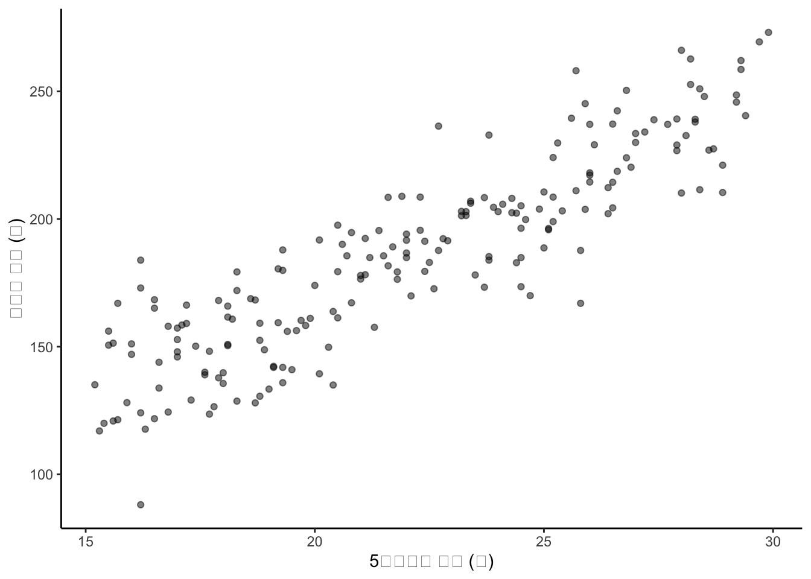
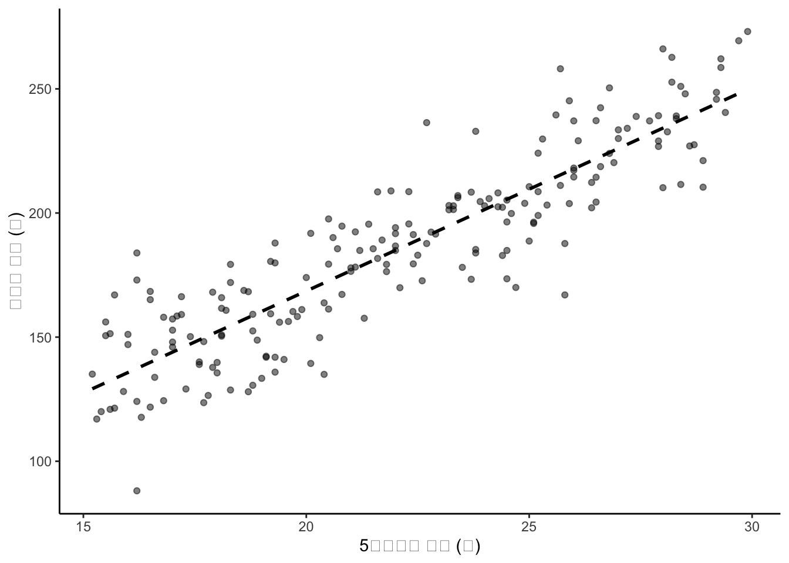
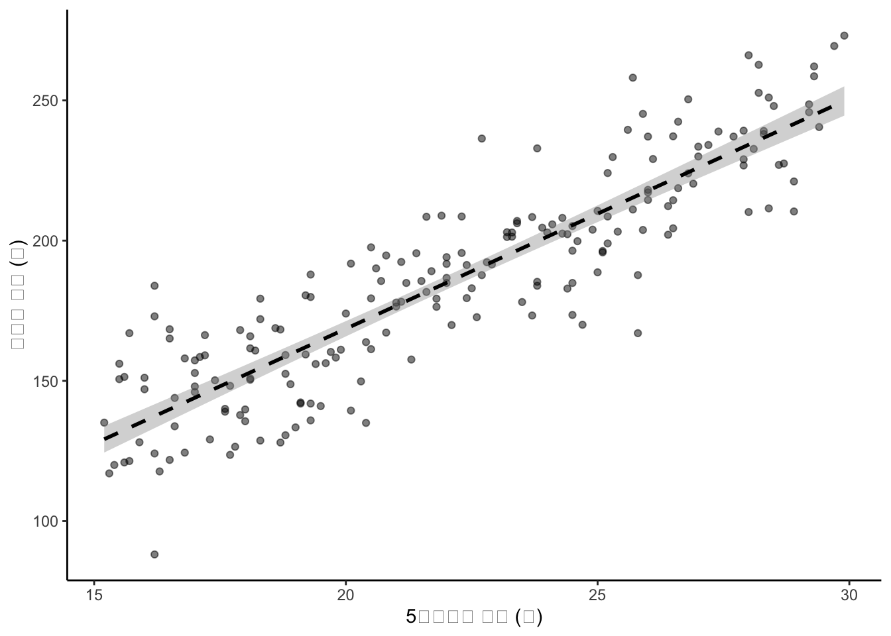
이 시뮬레이션된 예시에서 우리는 \(\beta_0\)와 \(\beta_1\)의 실제 값이 각각 0과 8.4라는 것을 알고 있습니다. 그러나 우리의 과제는 데이터와 단순 선형 회귀만을 사용하여 이들을 복구할 수 있는지 확인하는 것입니다. 즉, 5킬로미터 시간인 \(x\)를 사용하여 마라톤 시간인 \(y\)의 추정치 \(\hat{y}\)를 생성할 수 있는지 확인하는 것입니다(관례적으로 삿갓은 추정된 값 또는 추정될 값을 나타내는 데 사용됩니다)(James 기타 [2013년] 2021, p. 61).
\[\hat{y} = \hat{\beta}_0 + \hat{\beta}_1 x.\]
이것은 \(\beta_0\)와 \(\beta_1\)의 값을 추정하는 것을 포함합니다. 그러나 이러한 계수를 어떻게 추정해야 할까요? 선형 관계를 부과하더라도 많은 직선을 그릴 수 있기 때문에 많은 옵션이 있습니다. 그러나 그 선들 중 일부는 다른 선들보다 데이터에 더 잘 맞을 것입니다.
한 선이 다른 선보다 “더 좋다”고 정의할 수 있는 한 가지 방법은 알려진 각 \(x\)와 \(y\) 조합에 가능한 한 가깝게 맞는 경우입니다. “가능한 한 가깝게”를 정의하는 방법에는 여러 가지 후보가 있지만, 그 중 하나는 잔차 제곱합을 최소화하는 것입니다. 이를 위해 \(x\)가 주어졌을 때 \(\hat{\beta}_0\)와 \(\hat{\beta}_1\)에 대한 몇 가지 추측을 기반으로 \(\hat{y}\)에 대한 추정치를 생성합니다. 그런 다음 각 관측치 \(i\)에 대해 얼마나 틀렸는지 계산합니다(James 기타 [2013년] 2021, p. 62).
\[e_i = y_i - \hat{y}_i.\]
잔차 제곱합(RSS)을 계산하기 위해 모든 점에 걸쳐 오류를 합산합니다(음수 차이를 설명하기 위해 제곱을 취함)(James 기타 [2013년] 2021, p. 62).
\[\mbox{RSS} = e^2_1+ e^2_2 +\dots + e^2_n.\]
이것은 하나의 선형 최적선(그림 fig-fivekmvsmarathon-2)을 생성하지만, 이 지점까지 도달하는 데 필요한 모든 가정과 결정을 되돌아볼 가치가 있습니다.
단순 선형 회귀를 사용하는 우리의 기반에는 \(X\)와 \(Y\) 사이에 어떤 “진정한” 관계가 있다는 믿음이 있습니다. 그리고 이것은 \(X\)의 선형 함수입니다. 우리는 \(X\)와 \(Y\) 사이의 “진정한” 관계를 알지 못하며, 알 수도 없습니다. 우리가 할 수 있는 것은 표본을 사용하여 그것을 추정하는 것뿐입니다. 그러나 우리의 이해는 그 표본에 달려 있기 때문에, 가능한 모든 표본에 대해 계수로 측정되는 약간 다른 관계를 얻을 것입니다.
\(\epsilon\)은 우리의 오류 측정입니다. 즉, 데이터셋의 작고 제한된 세계에서 모델이 알지 못하는 것은 무엇입니까? 그러나 모델이 데이터셋 외부에서 적절한지 여부는 알려주지 않습니다(유추하자면, sec-hunt-data에서 소개된 실험의 내부 및 외부 타당성 개념을 생각하십시오). 그것은 우리의 판단과 경험을 필요로 합니다.
base R의 lm()을 사용하여 단순 선형 회귀를 수행할 수 있습니다. 먼저 결과 변수를 지정하고, ~를, 그 다음 예측 변수를 지정합니다. 결과 변수는 관심 있는 변수이고, 예측 변수는 해당 변수를 고려하는 기준입니다. 마지막으로 데이터셋을 지정합니다.
회귀를 실행하기 전에 변수의 클래스와 관측치 수를 빠르게 확인하여 예상과 일치하는지 확인하고 싶을 수 있습니다. 비록 워크플로 초기에 이미 확인했을 수도 있지만 말입니다. 그리고 실행한 후에는 추정치가 합리적인지 확인할 수 있습니다. 예를 들어, (시뮬레이션에서 우리가 직접 부과하지 않았다고 가정하고) 5킬로미터 달리기와 마라톤의 각 거리에 대한 지식을 바탕으로 \(\beta_1\)이 6에서 10 사이일 것으로 예상할 것입니다.
# 클래스와 관측치 수가 예상대로인지 확인
stopifnot(
class(sim_run_data$marathon_time) == "numeric",
class(sim_run_data$five_km_time) == "numeric",
nrow(sim_run_data) == 200
)
sim_run_data_first_model <-
lm(
marathon_time ~ five_km_time,
data = sim_run_data
)
stopifnot(between(
sim_run_data_first_model$coefficients[2],
6,
10
))회귀 결과를 빠르게 보려면 summary()를 사용할 수 있습니다.
summary(sim_run_data_first_model)
Call:
lm(formula = marathon_time ~ five_km_time, data = sim_run_data)
Residuals:
Min 1Q Median 3Q Max
-49.289 -11.948 0.153 11.396 46.511
Coefficients:
Estimate Std. Error t value Pr(>|t|)
(Intercept) 4.4692 6.7517 0.662 0.509
five_km_time 8.2049 0.3005 27.305 <2e-16 ***
---
Signif. codes: 0 '***' 0.001 '**' 0.01 '*' 0.05 '.' 0.1 ' ' 1
Residual standard error: 17.42 on 198 degrees of freedom
Multiple R-squared: 0.7902, Adjusted R-squared: 0.7891
F-statistic: 745.5 on 1 and 198 DF, p-value: < 2.2e-16그러나 modelsummary의 modelsummary()를 사용할 수도 있습니다(표 tbl-modelsummaryfivekmonly). 이 접근 방식의 장점은 깔끔하게 형식화된 표를 얻을 수 있다는 것입니다. 처음에는 “5km만” 열의 결과에 초점을 맞춥니다.
modelsummary(
list(
"5km만" = sim_run_data_first_model,
"5km만, 중앙값" = sim_run_data_centered_model
),
fmt = 2
)| 5km만 | 5km만, 중앙값 | |
|---|---|---|
| (Intercept) | 4.47 | 185.73 |
| (6.75) | (1.23) | |
| five_km_time | 8.20 | |
| (0.30) | ||
| centered_time | 8.20 | |
| (0.30) | ||
| Num.Obs. | 200 | 200 |
| R2 | 0.790 | 0.790 |
| R2 Adj. | 0.789 | 0.789 |
| AIC | 1714.7 | 1714.7 |
| BIC | 1724.6 | 1724.6 |
| Log.Lik. | -854.341 | -854.341 |
| F | 745.549 | 745.549 |
| RMSE | 17.34 | 17.34 |
표 tbl-modelsummaryfivekmonly의 상단 절반은 추정된 계수와 괄호 안의 표준 오차를 제공합니다. 그리고 하단 절반은 몇 가지 유용한 진단을 제공하며, 이 책에서는 너무 자세히 다루지 않을 것입니다. “5km만” 열의 절편은 가상의 5킬로미터 시간 0분과 관련된 마라톤 시간입니다. 이 예시가 절편 계수를 항상 신중하게 해석하고 때로는 무시해야 할 필요성을 보여주기를 바랍니다. 예를 들어, 이 상황에서 우리는 절편이 0이어야 한다는 것을 알고 있으며, 모든 관측치가 5킬로미터 시간 15분에서 30분 사이였기 때문에 최적의 적합을 위해 약 4로 설정되었습니다.
절편은 중앙값 5킬로미터 시간을 사용하여 회귀를 실행할 때 더 해석하기 쉬워집니다. 이는 표 tbl-modelsummaryfivekmonly의 “5km만, 중앙값” 열에서 수행합니다. 즉, 각 5킬로미터 시간에 대해 평균 5킬로미터 시간을 뺍니다. 이 경우 절편은 평균 시간으로 5킬로미터를 달리는 사람의 예상 마라톤 시간으로 해석됩니다. 기울기 추정치는 변경되지 않고 절편만 변경되었다는 점에 유의하십시오.
sim_run_data <-
sim_run_data |>
mutate(centered_time = five_km_time - mean(sim_run_data$five_km_time))
sim_run_data_centered_model <-
lm(
marathon_time ~ centered_time,
data = sim_run_data
)Gelman, Hill, 와/과 Vehtari (2020, p. 84)에 따라 계수를 효과보다는 비교로 고려할 것을 권장합니다. 그리고 이것이 하나의 데이터셋을 기반으로 한 평균적인 비교임을 명확히 하는 언어를 사용하십시오. 예를 들어, 5킬로미터 달리기 시간 계수는 다른 개인이 어떻게 비교되는지 보여준다고 생각할 수 있습니다. 5킬로미터 달리기 시간이 1분 차이 나는 데이터셋의 개인의 마라톤 시간을 비교할 때, 평균적으로 마라톤 시간은 약 8분 차이 나는 것을 발견합니다. 마라톤이 5킬로미터 달리기보다 대략 그만큼 더 길다는 점을 고려하면 이것은 합리적입니다.
broom의 augment()를 사용하여 원본 데이터셋에 적합된 값과 잔차를 추가할 수 있습니다. 이를 통해 잔차를 플로팅할 수 있습니다(그림 fig-fivekmvsmarathonresids).
sim_run_data <-
augment(
sim_run_data_first_model,
data = sim_run_data
)# 플롯 a)
ggplot(sim_run_data, aes(x = .resid)) +
geom_histogram(binwidth = 1) +
theme_classic() +
labs(y = "발생 횟수", x = "잔차")
# 플롯 b)
ggplot(sim_run_data, aes(x = five_km_time, y = .resid)) +
geom_point() +
geom_hline(yintercept = 0, linetype = "dotted", color = "grey") +
theme_classic() +
labs(y = "잔차", x = "5킬로미터 시간 (분)")
# 플롯 c)
ggplot(sim_run_data, aes(x = marathon_time, y = .resid)) +
geom_point() +
geom_hline(yintercept = 0, linetype = "dotted", color = "grey") +
theme_classic() +
labs(y = "잔차", x = "마라톤 시간 (분)")
# 플롯 d)
ggplot(sim_run_data, aes(x = marathon_time, y = .fitted)) +
geom_point() +
geom_abline(intercept = 0, slope = 1, linetype = "dashed") +
theme_classic() +
labs(y = "추정 마라톤 시간", x = "실제 마라톤 시간")
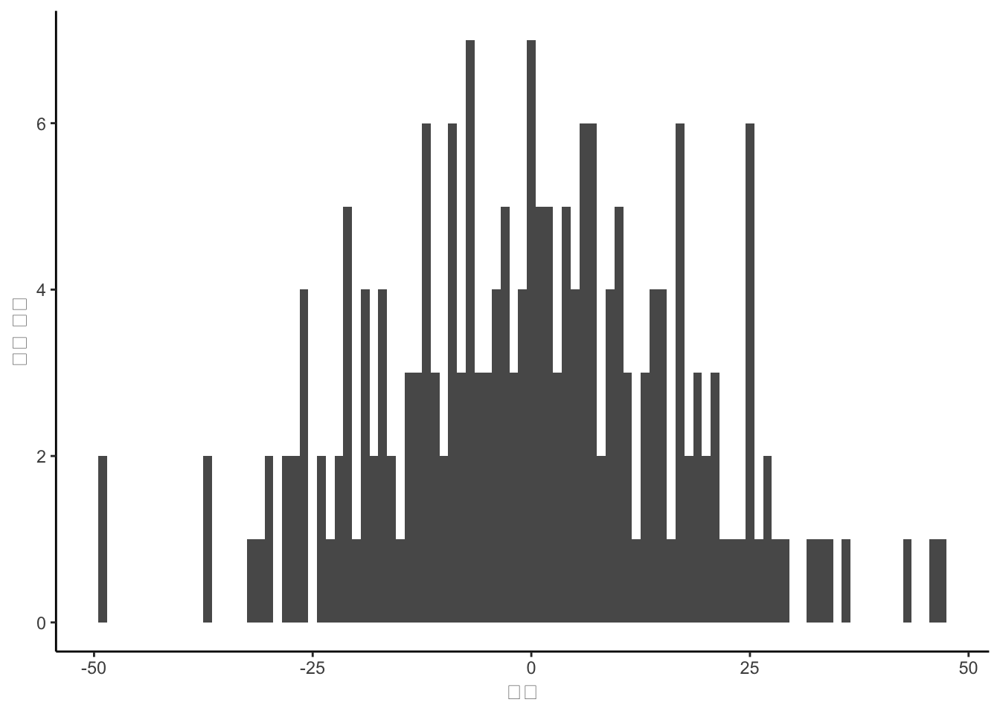
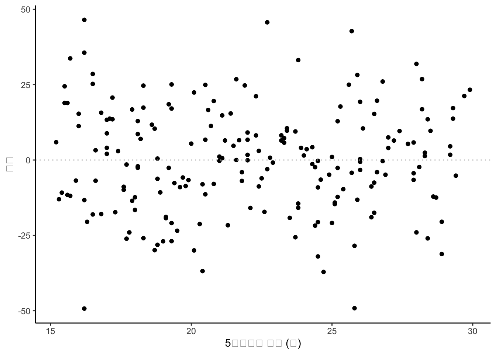
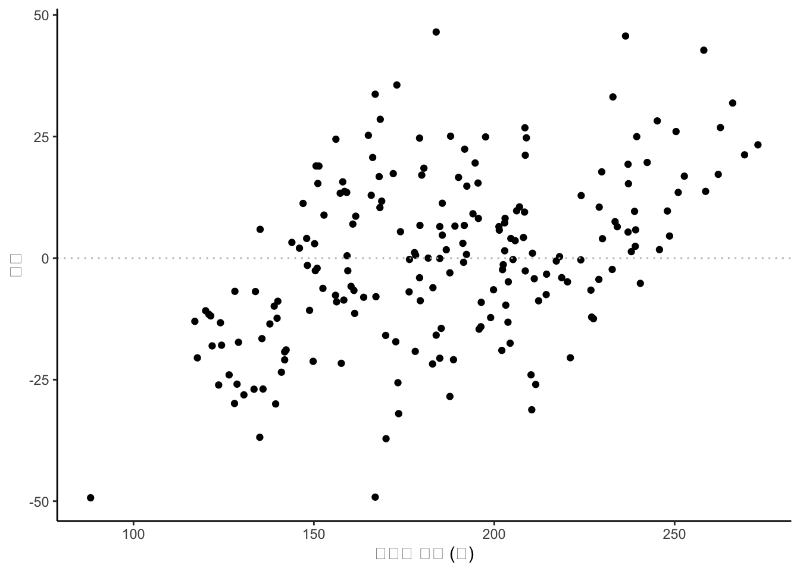
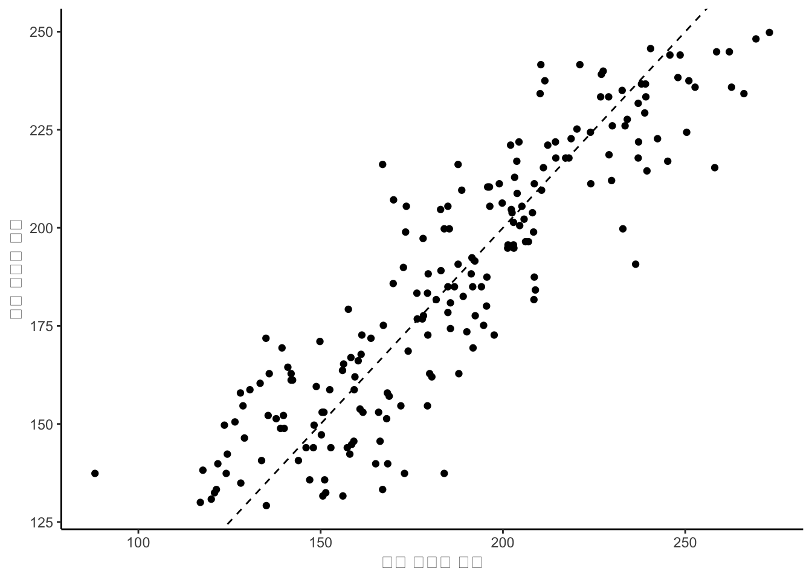
우리는 “진정한” 관계에 대해 이야기하려고 노력해야 하므로, 우리가 가진 표본에 대한 우리의 이해가 얼마나 의존하는지 포착하려고 노력해야 합니다. 그리고 이것이 표준 오차가 등장하는 지점입니다. 그것은 우리가 가진 데이터를 기반으로 매개변수 추정치에 대해 어떻게 생각해야 하는지에 대해 많은 가정을 기반으로 우리를 안내합니다(그림 fig-fivekmvsmarathon-3). 이 중 일부는 표준 오차가 표본 크기 \(n\)의 함수이며, 표본 크기가 증가함에 따라 표준 오차가 감소한다는 사실에 의해 포착됩니다.
계수에 대한 불확실성 범위를 요약하는 가장 일반적인 방법은 표준 오차를 신뢰 구간으로 변환하는 것입니다. 이러한 구간은 종종 계수의 주어진 실현에 대한 확률 진술을 나타내는 것으로 오해됩니다(즉, \(\hat\beta\)). 실제로는 신뢰 구간은 “기대치”에서만 이해할 수 있는 속성을 가진 통계량입니다(이는 실험을 여러 번 반복하는 것과 동일합니다). 95% 신뢰 구간은 “대략 95%의 확률로” 해당 범위에 일반적으로 알려지지 않은 모집단 매개변수가 포함된다는 범위입니다(James 기타 [2013년] 2021, p. 66).
계수가 정규 분포를 따를 때, 95% 신뢰 구간의 하한과 상한은 대략 \(\hat{\beta_1} \pm 2 \times \mbox{SE}\left(\hat{\beta_1}\right)\)가 될 것입니다. 예를 들어, 마라톤 시간 예시의 경우 하한은 \(8.2 - 2 \times 0.3 = 7.6\)이고 상한은 \(8.2 + 2 \times 0.3 = 8.8\)이며, 실제 값(이 경우 시뮬레이션했기 때문에만 알고 있음)은 8.4입니다.
이러한 메커니즘을 사용하여 주장을 테스트할 수 있습니다. 예를 들어, \(X\)와 \(Y\) 사이에 관계가 없다는 주장, 즉 \(\beta_1 = 0\)을 \(X\)와 \(Y\) 사이에 어떤 관계가 있다는 주장, 즉 \(\beta_1 \neq 0\)의 대안으로 주장할 수 있습니다. 이것이 앞에서 언급된 귀무 가설 검정 접근 방식입니다. sec-hunt-data에서 우리는 차 시음자가 우유 또는 차가 먼저 추가되었는지 구별할 수 있다는 것을 확신하는 데 얼마나 많은 증거가 필요한지 결정해야 했습니다. 마찬가지로, 여기서 우리는 \(\beta_1\)의 추정치인 \(\hat{\beta}_1\)이 \(\beta_1 \neq 0\)이라고 주장하는 데 편안할 만큼 0에서 충분히 멀리 떨어져 있는지 결정해야 합니다. 만약 우리가 \(\beta_1\)의 추정치에 매우 확신한다면 멀리 떨어져 있을 필요는 없지만, 그렇지 않다면 상당해야 할 것입니다. 예를 들어, 신뢰 구간에 0이 포함되어 있다면 \(\beta_1 \neq 0\)을 시사하는 증거가 부족합니다. \(\hat{\beta}_1\)의 표준 오차는 다양한 요인을 설명하는 데 엄청난 역할을 하며, 그 중 일부만 실제로 설명할 수 있으며, 우리를 설득하는 데 필요한 것이 무엇인지에 대한 우리의 선택도 마찬가지입니다.
우리는 이 표준 오차와 \(\hat{\beta}_1\)을 사용하여 “검정 통계량” 또는 t-통계량을 얻습니다.
\[t = \frac{\hat{\beta}_1}{\mbox{SE}(\hat{\beta}_1)}.\]
그런 다음 이 t-통계량을 (student1908probable의?) t-분포와 비교하여 \(\beta_1 = 0\)인 경우 이 절대 t-통계량 또는 더 큰 t-통계량을 얻을 확률을 계산합니다. 이 확률이 p-값입니다. 더 작은 p-값은 “관찰된 검정 통계량만큼 극단적인 것을 관찰할 확률”이 더 작다는 것을 의미합니다(Gelman, Hill, 와/과 Vehtari 2020, p. 57). 여기서 우리는 표준 정규 분포 대신 (student1908probable의?) t-분포를 사용합니다. 왜냐하면 t-분포는 표준 정규 분포보다 꼬리가 약간 더 길기 때문입니다.
말! 단순한 말! 얼마나 끔찍한가! 얼마나 명확하고 생생하며 잔인한가! 그것들로부터 벗어날 수 없었다. 그러나 그것들에는 얼마나 미묘한 마법이 있었던가! 그것들은 형태 없는 것들에 플라스틱 형태를 부여할 수 있는 것 같았고, 비올이나 류트의 음악처럼 달콤한 자신만의 음악을 가지고 있는 것 같았다. 단순한 말! 말만큼 실제적인 것이 있었던가?
도리안 그레이의 초상 (Wilde 1891).
우리는 이 책에서 p-값을 많이 사용하지 않을 것입니다. 왜냐하면 그것들은 특정하고 미묘한 개념이기 때문입니다. 그것들은 이해하기 어렵고 남용하기 쉽습니다. 비록 “과학적 추론”에 “거의 도움이 되지 않지만” 많은 분야에서 그것들에 잘못 집착하고 있습니다(Nelder 1999, p. 257). 한 가지 문제는 그것들이 데이터 수집 및 정리 과정에 들어간 모든 것을 포함하여 워크플로의 모든 가정을 구현한다는 것입니다. 모든 가정이 올바르다면 p-값은 함의를 가지지만, 전체 데이터 과학 워크플로를 고려할 때 일반적으로 엄청나게 많은 가정이 있습니다. 그리고 p-값은 가정이 충족되는지 여부에 대한 지침을 제공하지 않습니다(Greenland 기타 2016 p. 339).
p-값은 귀무 가설이 거짓이기 때문에 귀무 가설을 기각할 수 있지만, 일부 데이터가 잘못 수집되거나 준비되었기 때문일 수도 있습니다. 다른 모든 가정이 올바른 경우에만 p-값이 우리가 테스트하려는 가설에 대해 말한다는 것을 확신할 수 있습니다. p-값을 사용하는 것이 잘못된 것은 아니지만, 정교하고 사려 깊은 방식으로 사용하는 것이 중요합니다. (coxtalks는?) 이것이 무엇을 요구하는지 논의합니다.
p-값에 대한 부적절한 초점을 쉽게 볼 수 있는 한 가지 응용 분야는 검정력 분석입니다. 통계적 의미에서 검정력은 거짓인 귀무 가설을 기각할 확률을 의미합니다. 검정력이 가설 검정과 관련되어 있으므로 표본 크기와도 관련이 있습니다. 연구가 “검정력이 부족하다”는 우려가 종종 있습니다. 즉, 표본이 충분히 크지 않았다는 의미입니다. 그러나 데이터가 부적절하게 정리되었다는 우려는 거의 없습니다. 비록 p-값만으로는 이러한 것들을 구별할 수 없지만 말입니다. (meng2018statistical과?) (Bradley2021이?) 보여주듯이, 검정력에 초점을 맞추는 것은 데이터가 고품질인지 확인해야 하는 우리의 책임을 가릴 수 있습니다.
거인의 어깨 위에 서서
낸시 리드 박사는 토론토 대학교 통계 과학과 교수입니다. 1979년 스탠포드 대학교에서 통계학 박사 학위를 받은 후, 런던 임페리얼 칼리지에서 박사후 연구원으로 재직했습니다. 1980년 브리티시 컬럼비아 대학교 조교수로 임명되었고, 1986년 토론토 대학교로 옮겨 1988년 정교수로 승진했으며, 1997년부터 2002년까지 학과장을 역임했습니다(Staicu 2017). 그녀의 연구는 소표본 체제에서 정확한 추론을 얻고, 다루기 힘든 가능성을 특징으로 하는 복잡한 모델에 대한 추론 절차를 개발하는 데 중점을 둡니다. (cox1987parameter는?) 모델을 재매개변수화하는 것이 추론을 단순화할 수 있는 방법을 조사하고, (varin2011overview는?) 다루기 힘든 가능성을 근사하는 방법을 조사하며, (reid2003asymptotics는?) 소표본 체제에서 추론 절차를 개괄합니다. 리드 박사는 1992년 COPSS 회장상, 2016년 왕립 통계 학회 가이 메달 은상, 2022년 금상, 그리고 2022년 COPSS 우수 업적상 및 강연을 수상했습니다.
12.3 다중 선형 회귀
지금까지 우리는 하나의 설명 변수만 고려했습니다. 그러나 일반적으로 하나 이상을 가질 것입니다. 한 가지 접근 방식은 각 설명 변수에 대해 별도의 회귀를 실행하는 것입니다. 그러나 각각에 대한 별도의 선형 회귀와 비교하여 더 많은 설명 변수를 추가하면 다른 설명 변수를 조정하면서 결과 변수와 관심 있는 예측 변수 간의 연관성을 평가할 수 있습니다. 결과는 상당히 다를 수 있습니다. 특히 설명 변수들이 서로 상관 관계가 있을 때 더욱 그렇습니다.
연속적이지 않은 설명 변수도 고려하고 싶을 수 있습니다. 예를 들어: 임신 여부; 낮 또는 밤. 두 가지 옵션만 있는 경우 이진 변수를 사용할 수 있으며, 이는 0 또는 1로 간주됩니다. c("Myles", "Ruth", "Ruth", "Myles", "Myles", "Ruth")와 같이 두 가지 값만 있는 문자 값 열이 있는 경우, 일반적인 회귀 설정에서 이를 설명 변수로 사용하면 이진 변수로 처리됩니다. 두 가지 수준 이상이 있는 경우, 일부 기준 결과가 절편에 통합되는 이진 변수의 조합을 사용할 수 있습니다.
12.3.1 시뮬레이션 예시: 비와 습도가 있는 달리기 시간
예를 들어, 마라톤과 5킬로미터 달리기 시간 사이의 시뮬레이션된 관계에 비가 왔는지 여부를 추가합니다. 그런 다음 비가 오면 개인이 평소보다 10분 더 느려진다고 지정합니다.
slow_in_rain <- 10
sim_run_data <-
sim_run_data |>
mutate(was_raining = sample(
c("Yes", "No"),
size = num_observations,
replace = TRUE,
prob = c(0.2, 0.8)
)) |>
mutate(
marathon_time = if_else(
was_raining == "Yes",
marathon_time + slow_in_rain,
marathon_time
)
) |>
select(five_km_time, marathon_time, was_raining)lm()에 +를 사용하여 추가 설명 변수를 추가할 수 있습니다. 다시, 클래스 및 관측치 수에 대한 다양한 빠른 테스트를 포함하고, 결측값에 대한 또 다른 테스트를 추가할 것입니다. 비의 계수가 무엇이어야 하는지 전혀 모를 수 있지만, 더 빠르게 만들 것으로 예상하지 않았다면, 음수가 아닌 값의 넓은 간격으로 테스트를 추가할 수도 있습니다.
stopifnot(
class(sim_run_data$marathon_time) == "numeric",
class(sim_run_data$five_km_time) == "numeric",
class(sim_run_data$was_raining) == "character",
all(complete.cases(sim_run_data)),
nrow(sim_run_data) == 200
)
sim_run_data_rain_model <-
lm(
marathon_time ~ five_km_time + was_raining,
data = sim_run_data
)
stopifnot(
between(sim_run_data_rain_model$coefficients[3], 0, 20)
)
summary(sim_run_data_rain_model)
Call:
lm(formula = marathon_time ~ five_km_time + was_raining, data = sim_run_data)
Residuals:
Min 1Q Median 3Q Max
-50.760 -11.942 0.471 11.719 46.916
Coefficients:
Estimate Std. Error t value Pr(>|t|)
(Intercept) 3.8791 6.8385 0.567 0.571189
five_km_time 8.2164 0.3016 27.239 < 2e-16 ***
was_rainingYes 11.8753 3.2189 3.689 0.000291 ***
---
Signif. codes: 0 '***' 0.001 '**' 0.01 '*' 0.05 '.' 0.1 ' ' 1
Residual standard error: 17.45 on 197 degrees of freedom
Multiple R-squared: 0.791, Adjusted R-squared: 0.7889
F-statistic: 372.8 on 2 and 197 DF, p-value: < 2.2e-16표 tbl-modelsummaryruntimes의 두 번째 열의 결과는 데이터셋에서 비가 오는 동안 달린 개인과 그렇지 않은 개인을 비교할 때, 비가 오는 동안 달린 개인의 시간이 더 느려지는 경향이 있음을 보여줍니다. 그리고 이것은 데이터 플롯을 보면 예상하는 것과 일치합니다(그림 fig-fivekmvsmarathonbinary-1).
여기에는 두 가지 유형의 테스트가 포함되었습니다. lm() 전에 실행되는 테스트는 입력을 확인하고, lm() 후에 실행되는 테스트는 출력을 확인합니다. 일부 입력 확인이 이전과 동일하다는 것을 알 수 있습니다. 테스트를 여러 번 다시 작성하는 것을 피하는 한 가지 방법은 testthat를 설치하고 로드하여 예를 들어 “class_tests.R”이라는 R 파일에 클래스 테스트 모음을 만들고, test_file()을 사용하여 호출하는 것입니다.
예를 들어, 다음을 전용 테스트 폴더에 “test_class.R”로 저장할 수 있습니다.
test_that("클래스 확인", {
expect_type(sim_run_data$marathon_time, "double")
expect_type(sim_run_data$five_km_time, "double")
expect_type(sim_run_data$was_raining, "character")
})다음은 “test_observations.R”로 저장할 수 있습니다.
test_that("관측치 수가 올바른지 확인", {
expect_equal(nrow(sim_run_data), 200)
})
test_that("완료 확인", {
expect_true(all(complete.cases(sim_run_data)))
})마지막으로, 다음은 “test_coefficient_estimates.R”로 저장할 수 있습니다.
test_that("계수 확인", {
expect_gt(sim_run_data_rain_model$coefficients[3], 0)
expect_lt(sim_run_data_rain_model$coefficients[3], 20)
})그런 다음 회귀 코드를 변경하여 이 모든 테스트 파일을 직접 작성하는 대신 호출할 수 있습니다.
test_file("tests/test_observations.R")
test_file("tests/test_class.R")
sim_run_data_rain_model <-
lm(
marathon_time ~ five_km_time + was_raining,
data = sim_run_data
)
test_file("tests/test_coefficient_estimates.R")계수 확인에서 무엇을 찾고 있는지 명확히 하는 것이 중요합니다. 데이터를 시뮬레이션할 때 데이터가 어떻게 보일지에 대한 합리적인 추측을 설정하고, 마찬가지로 합리적인 추측을 테스트합니다. 실패하는 테스트가 반드시 되돌아가서 변경해야 할 이유는 아니지만, 대신 두 가지 모두에서 무슨 일이 일어나고 있는지 살펴보고 필요한 경우 테스트를 업데이트해야 한다는 알림입니다.
추가 설명 변수를 포함하고 싶을 뿐만 아니라, 그들이 서로 관련되어 있다고 생각할 수도 있습니다. 예를 들어, 비가 오는 날 습도도 높다면 비가 정말 중요할 수 있습니다. 우리는 습도와 온도, 그리고 이 두 변수가 어떻게 상호 작용하는지에 관심이 있습니다(그림 fig-fivekmvsmarathonbinary-2). 모델을 지정할 때 + 대신 *를 사용하여 이를 수행할 수 있습니다. 이러한 방식으로 변수를 상호 작용시킬 때, 개별 변수도 포함해야 하며 lm()은 기본적으로 이를 수행합니다. 결과는 표 tbl-modelsummaryruntimes의 세 번째 열에 포함되어 있습니다.
slow_in_humidity <- 15
sim_run_data <- sim_run_data |>
mutate(
humidity = sample(c("High", "Low"), size = num_observations,
replace = TRUE, prob = c(0.2, 0.8)),
marathon_time =
marathon_time + if_else(humidity == "High", slow_in_humidity, 0),
weather_conditions = case_when(
was_raining == "No" & humidity == "Low" ~ "비 없음, 습하지 않음",
was_raining == "Yes" & humidity == "Low" ~ "비, 습하지 않음",
was_raining == "No" & humidity == "High" ~ "비 없음, 습함",
was_raining == "Yes" & humidity == "High" ~ "비, 습함"
)
)base <-
sim_run_data |>
ggplot(aes(x = five_km_time, y = marathon_time)) +
labs(
x = "5킬로미터 시간 (분)",
y = "마라톤 시간 (분)"
) +
theme_classic() +
scale_color_brewer(palette = "Set1") +
theme(legend.position = "bottom")
base +
geom_point(aes(color = was_raining)) +
geom_smooth(
aes(color = was_raining),
method = "lm",
alpha = 0.3,
linetype = "dashed",
formula = "y ~ x"
) +
labs(color = "비가 왔습니까?")
base +
geom_point(aes(color = weather_conditions)) +
geom_smooth(
aes(color = weather_conditions),
method = "lm",
alpha = 0.3,
linetype = "dashed",
formula = "y ~ x"
) +
labs(color = "조건")
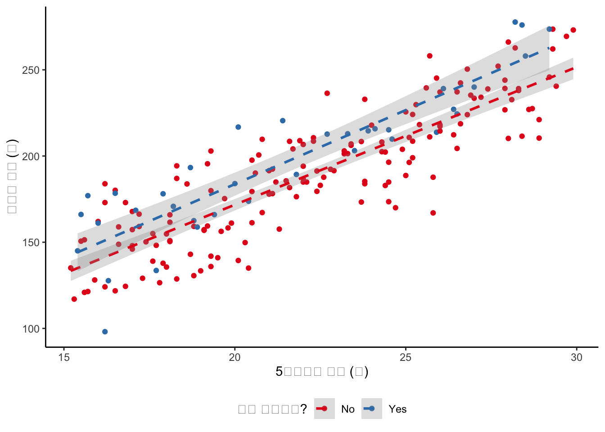
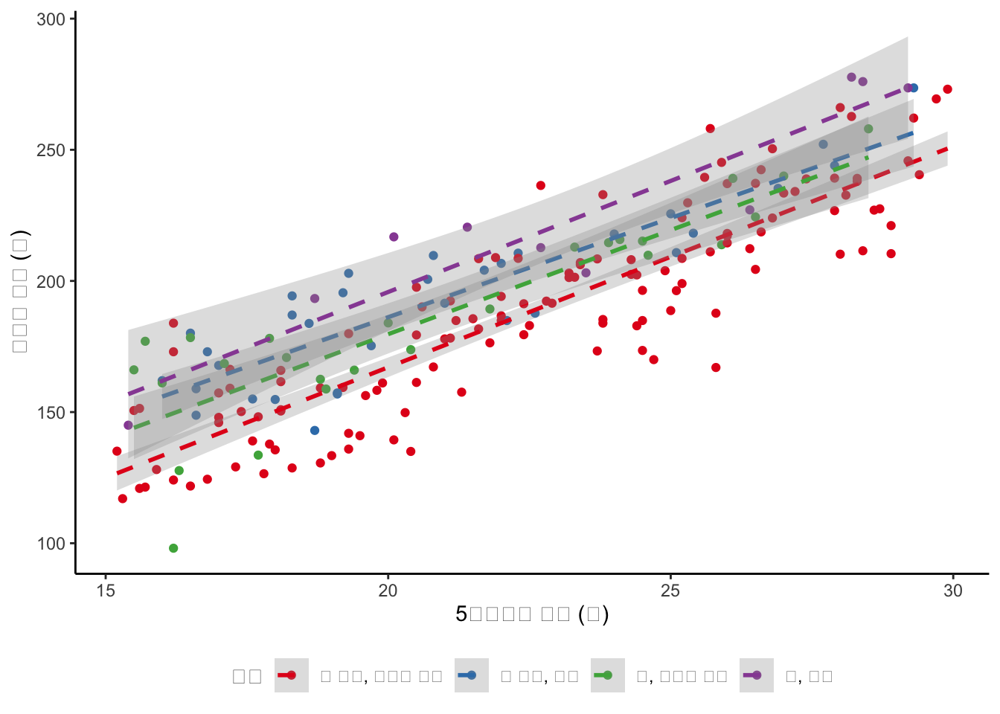
sim_run_data_rain_and_humidity_model <-
lm(
marathon_time ~ five_km_time + was_raining * humidity,
data = sim_run_data
)
modelsummary(
list(
"5km만" = sim_run_data_first_model,
"비 추가" = sim_run_data_rain_model,
"습도 추가" = sim_run_data_rain_and_humidity_model
),
fmt = 2
)| 5km만 | 비 추가 | 습도 추가 | |
|---|---|---|---|
| (Intercept) | 4.47 | 3.88 | 20.68 |
| (6.75) | (6.84) | (7.12) | |
| five_km_time | 8.20 | 8.22 | 8.24 |
| (0.30) | (0.30) | (0.31) | |
| was_rainingYes | 11.88 | 11.00 | |
| (3.22) | (6.36) | ||
| humidityLow | -18.01 | ||
| (3.45) | |||
| was_rainingYes × humidityLow | 0.92 | ||
| (7.47) | |||
| Num.Obs. | 200 | 200 | 200 |
| R2 | 0.790 | 0.791 | 0.795 |
| R2 Adj. | 0.789 | 0.789 | 0.791 |
| AIC | 1714.7 | 1716.3 | 1719.4 |
| BIC | 1724.6 | 1729.5 | 1739.2 |
| Log.Lik. | -854.341 | -854.169 | -853.721 |
| F | 745.549 | 372.836 | 189.489 |
| RMSE | 17.34 | 17.32 | 17.28 |
선형 회귀 추정치의 타당성에 대한 다양한 위협과 고려해야 할 측면이 있습니다. 특히 익숙하지 않은 데이터셋을 사용할 때 더욱 그렇습니다. 이를 사용할 때 이러한 문제를 해결해야 하며, 일반적으로 그래프와 관련 텍스트로 대부분의 문제를 해결하기에 충분합니다. 우려되는 측면은 다음과 같습니다.
- 설명 변수의 선형성. 예측 변수가 선형적으로 들어가는지 여부에 관심이 있습니다. 일반적으로 변수 그래프를 사용하여 목적에 충분한 선형성이 설명 변수에 있다고 확신할 수 있습니다.
- 오차의 동분산성. 오차가 표본 전체에서 체계적으로 커지거나 작아지지 않는지 여부에 관심이 있습니다. 만약 그렇다면 이분산성이라고 부릅니다. 다시, 그림 fig-fivekmvsmarathonresids-2와 같은 오차 그래프를 사용하여 이를 확신할 수 있습니다.
- 오차의 독립성. 오차가 서로 상관 관계가 없는지 여부에 관심이 있습니다. 예를 들어, 평균 일일 온도와 같은 날씨 관련 측정에 관심이 있다면, 하루의 온도가 다른 날의 온도와 유사할 가능성이 높기 때문에 패턴을 찾을 수 있습니다. 그림 fig-fivekmvsmarathonresids-3과 같은 관측값과 비교한 잔차 또는 그림 fig-fivekmvsmarathonresids-4와 같은 실제 결과와 비교한 추정치를 살펴보면 이 조건을 충족했음을 확신할 수 있습니다.
- 이상치 및 기타 고영향 관측치. 마지막으로, 결과가 소수의 관측치에 의해 좌우되는 것을 걱정할 수 있습니다. 예를 들어, sec-static-communication과 Anscombe의 콰르텟을 다시 생각하면, 선형 회귀 추정치는 하나 또는 두 개의 특정 점의 포함에 크게 영향을 받을 것입니다. sec-exploratory-data-analysis에서 미국 주에 대해 수행한 방식과 같이 다양한 하위 집합에 대한 분석을 고려하여 이를 편안하게 받아들일 수 있습니다.
이러한 측면은 통계적 관심사이며 모델이 작동하는지 여부와 관련이 있습니다. 타당성에 대한 가장 중요한 위협이자 따라서 어느 정도 길게 다루어야 할 측면은 이 모델이 관심 있는 연구 질문과 직접적으로 관련이 있는지 여부입니다.
거인의 어깨 위에 서서
다니엘라 위튼 박사는 워싱턴 대학교의 수학 통계학 도로시 길포드 석좌 교수이자 통계학 및 생물 통계학 교수입니다. 2010년 스탠포드 대학교에서 통계학 박사 학위를 받은 후, 워싱턴 대학교에 조교수로 합류했습니다. 2018년 정교수로 승진했습니다. 그녀의 연구의 활발한 분야 중 하나는 표본 분할의 효과에 초점을 맞춘 이중 담그기입니다(Gao, Bien, 와/과 Witten 2022). 그녀는 영향력 있는 통계 학습 소개(James 기타 [2013년] 2021)의 저자입니다. 위튼은 2020년 미국 통계 학회 펠로우로 임명되었고 2022년 COPSS 회장상을 수상했습니다.
12.4 모델 구축
(breiman2001statistical은?) 통계 모델링의 두 가지 문화를 설명합니다. 하나는 추론에 초점을 맞추고 다른 하나는 예측에 초점을 맞춥니다. 일반적으로 (breiman2001statistical이?) 출판될 무렵에는 다양한 분야가 추론 또는 예측 중 하나에 초점을 맞추는 경향이 있었습니다. 예를 들어, (Jordan2004는?) 통계학과 컴퓨터 과학이 오랫동안 분리되어 있었지만, 각 분야의 목표가 어떻게 더 밀접하게 일치하고 있는지 설명합니다. 데이터 과학, 특히 기계 학습의 부상은 이제 둘 다에 익숙해질 필요가 있음을 의미합니다(Neufeld 와/과 Witten 2021). 두 문화는 더 가까워지고 있으며, 예측과 추론 사이에는 중복과 상호 작용이 있습니다. 그러나 그들의 분리된 진화는 여전히 상당한 문화적 차이가 있음을 의미합니다. 이것의 작은 예로, “기계 학습”이라는 용어는 컴퓨터 과학에서 사용되는 경향이 있는 반면, “통계 학습”이라는 용어는 통계학에서 사용되는 경향이 있습니다. 비록 그들이 일반적으로 동일한 메커니즘을 지칭하더라도 말입니다.
이 책에서는 베이즈 프레임워크에서 모델을 적합하기 위해 확률 프로그래밍 언어 Stan을 사용하여 추론에 초점을 맞추고, rstanarm을 사용하여 인터페이스할 것입니다. 추론과 예측은 다른 문화, 생태계 및 우선 순위를 가집니다. 둘 다에 익숙해지도록 노력해야 합니다. 이러한 다른 문화가 나타나는 한 가지 방법은 언어 선택입니다. 이 책의 주요 언어는 R이며, 일관성을 위해 여기서는 R에 초점을 맞춥니다. 그러나 특히 예측에 초점을 맞추지만 예측에만 국한되지 않는 광범위한 문화가 Python을 사용합니다. 처음에는 하나의 언어와 접근 방식에만 초점을 맞추는 것을 권장하지만, 초기 익숙함을 개발한 후에는 다국어에 능숙해지는 것이 중요합니다. Python을 기반으로 한 예측은 온라인 부록 sec-predictingpythons에서 소개합니다.
다시 자세히 설명하지는 않겠지만, 베이즈 설정에서 회귀를 실행하는 것은 lm()의 기반이 되는 빈도주의 접근 방식과 유사합니다. 회귀 관점에서 주요 차이점은 모델에 포함된 매개변수(즉, \(\beta_0\), \(\beta_1\) 등)가 확률 변수로 간주되므로 자체적으로 관련 확률 분포를 가진다는 것입니다. 대조적으로, 빈도주의 패러다임은 이러한 계수에서 발생하는 모든 무작위성이 오차 항 \(\epsilon\)의 분포에 대한 매개변수 가정에서 비롯된다고 가정합니다.
베이즈 프레임워크에서 회귀를 실행하기 전에, 우리는 이러한 각 매개변수에 대한 시작 확률 분포를 결정해야 합니다. 이를 “사전 분포”라고 부릅니다. 사전 분포의 존재는 몇 가지 추가적인 복잡성을 추가하지만, 여러 가지 장점이 있으며, 아래에서 사전 분포 문제에 대해 더 자세히 논의할 것입니다. 이것이 이 책에서 옹호하는 워크플로의 또 다른 이유입니다. 즉, 시뮬레이션 단계는 사전 분포로 직접 이어집니다. 우리는 다시 관심 있는 모델을 지정할 것이지만, 이번에는 사전 분포를 포함할 것입니다.
\[ \begin{aligned} y_i|\mu_i, \sigma &\sim \mbox{Normal}(\mu_i, \sigma) \\ \mu_i &= \beta_0 +\beta_1x_i\\ \beta_0 &\sim \mbox{Normal}(0, 2.5) \\ \beta_1 &\sim \mbox{Normal}(0, 2.5) \\ \sigma &\sim \mbox{Exponential}(1) \\ \end{aligned} \]
데이터의 정보를 사전 분포와 결합하여 매개변수에 대한 사후 분포를 얻습니다. 추론은 사후 분포 분석을 기반으로 수행됩니다.
베이즈 접근 방식과 지금까지 모델링을 수행해 온 방식의 또 다른 차이점은 베이즈 모델은 일반적으로 실행하는 데 더 오래 걸린다는 것입니다. 이 때문에 모델을 별도의 R 스크립트에서 실행한 다음 saveRDS()로 저장하는 것이 유용할 수 있습니다. “eval” 및 “echo”에 대한 합리적인 Quarto 청크 옵션( sec-reproducible-workflows 참조)을 사용하면 모델을 논문이 컴파일될 때마다 실행하는 대신 readRDS()로 Quarto 문서로 읽어들일 수 있습니다. 이렇게 하면 주어진 모델에 대해 모델 지연이 한 번만 부과됩니다. 모델이 완료되었을 때 오디오 알림을 받기 위해 beepr의 beep()를 모델 끝에 추가하는 것도 유용할 수 있습니다.
sim_run_data_first_model_rstanarm <-
stan_glm(
formula = marathon_time ~ five_km_time + was_raining,
data = sim_run_data,
family = gaussian(),
prior = normal(location = 0, scale = 2.5),
prior_intercept = normal(location = 0, scale = 2.5),
prior_aux = exponential(rate = 1),
seed = 853
)
beep()
saveRDS(
sim_run_data_first_model_rstanarm,
file = "sim_run_data_first_model_rstanarm.rds"
)sim_run_data_first_model_rstanarm <-
readRDS(file = "sim_run_data_first_model_rstanarm.rds")stan_glm()을 “gaussian()” 패밀리와 함께 사용하여 다중 선형 회귀를 지정하고 모델 공식은 base R 및 rstanarm과 동일한 방식으로 작성됩니다. 우리는 기본 사전 분포를 명시적으로 추가했습니다. 이는 좋은 관행이라고 생각하지만, 엄밀히 말하면 필수는 아닙니다.
표 tbl-modelsummarybayesbetter의 첫 번째 열에 있는 추정 결과는 우리가 예상하는 것과 약간 다릅니다. 예를 들어, 마라톤 시간의 증가율은 5킬로미터 시간 증가 1분당 약 3분으로 추정되는데, 이는 5킬로미터 달리기와 마라톤 거리의 비율을 고려할 때 낮은 수치로 보입니다.
12.4.1 사전 분포 선택
사전 분포를 선택하는 문제는 어려운 문제이며 광범위한 연구 주제입니다. 이 책의 목적을 위해서는 rstanarm의 기본값을 사용하는 것으로 충분합니다. 그러나 기본값일지라도 사전 분포는 모델에 명시적으로 지정되고 함수에 포함되어야 합니다. 이는 다른 사람들에게 무엇이 수행되었는지 명확히 하기 위함입니다. default_prior_intercept() 및 default_prior_coef()를 사용하여 rstanarm의 기본 사전 분포를 찾은 다음 모델에 명시적으로 포함할 수 있습니다.
어떤 사전 분포를 지정해야 할지 알기 어려운 것은 일반적인 일입니다. 다른 사람의 rstanarm 코드를 수정하여 시작하는 것은 완벽하게 괜찮습니다. 만약 그들이 사전 분포를 지정하지 않았다면, prior_summary() 도우미 함수를 사용하여 어떤 사전 분포가 사용되었는지 확인할 수 있습니다.
prior_summary(sim_run_data_first_model_rstanarm)Priors for model 'sim_run_data_first_model_rstanarm'
------
Intercept (after predictors centered)
~ normal(location = 0, scale = 2.5)
Coefficients
~ normal(location = [0,0], scale = [2.5,2.5])
Auxiliary (sigma)
~ exponential(rate = 1)
------
See help('prior_summary.stanreg') for more details우리는 데이터를 포함하기 전에 사전 분포가 무엇을 의미하는지 이해하는 데 관심이 있습니다. 이를 위해 사전 예측 검사를 구현합니다. 이는 사전 분포에서 시뮬레이션하여 설명 변수와 결과 변수 간의 관계의 가능한 크기와 방향에 대해 모델이 무엇을 의미하는지 살펴보는 것을 의미합니다. 이 과정은 지금까지 수행한 다른 모든 시뮬레이션과 다르지 않습니다.
draws <- 1000
priors <-
tibble(
sigma = rep(rexp(n = draws, rate = 1), times = 16),
beta_0 = rep(rnorm(n = draws, mean = 0, sd = 2.5), times = 16),
beta_1 = rep(rnorm(n = draws, mean = 0, sd = 2.5), times = 16),
five_km_time = rep(15:30, each = draws),
mu = beta_0 + beta_1 * five_km_time
) |>
rowwise() |>
mutate(
marathon_time = rnorm(n = 1, mean = mu, sd = sigma)
)priors |>
ggplot(aes(x = marathon_time)) +
geom_histogram(binwidth = 10) +
theme_classic()
priors |>
ggplot(aes(x = five_km_time, y = marathon_time)) +
geom_point(alpha = 0.1) +
theme_classic()
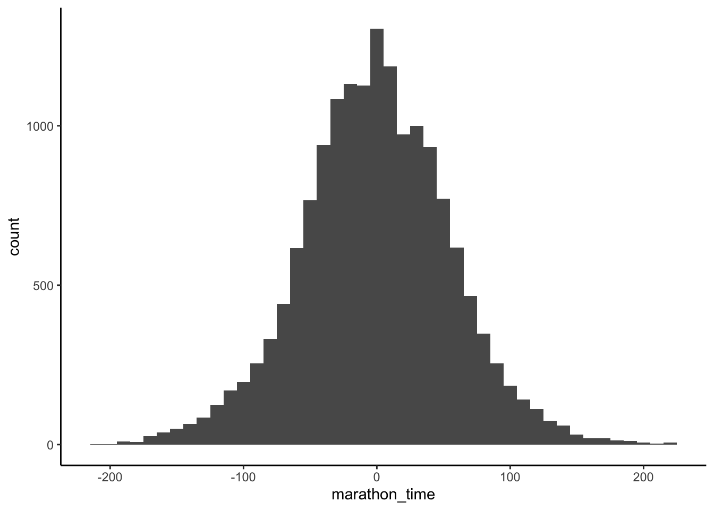
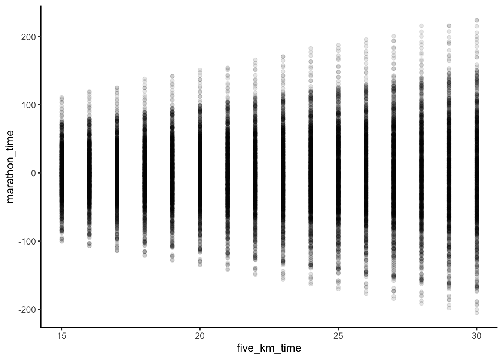
그림 fig-worstmodelever는 우리의 모델이 제대로 구축되지 않았음을 시사합니다. 세계 기록 마라톤 시간뿐만 아니라 음수 마라톤 시간도 있습니다! 한 가지 문제는 \(\beta_1\)에 대한 우리의 사전 분포가 우리가 아는 모든 정보를 고려하지 않는다는 것입니다. 마라톤이 5킬로미터 달리기보다 약 8배 더 길다는 것을 알고 있으므로 \(\beta_1\)에 대한 사전 분포를 그 주변에 중심을 둘 수 있습니다. 재지정된 모델은 다음과 같습니다.
\[ \begin{aligned} y_i|\mu_i, \sigma &\sim \mbox{Normal}(\mu_i, \sigma) \\ \mu_i &= \beta_0 +\beta_1x_i\\ \beta_0 &\sim \mbox{Normal}(0, 2.5) \\ \beta_1 &\sim \mbox{Normal}(8, 2.5) \\ \sigma &\sim \mbox{Exponential}(1) \\ \end{aligned} \] 그리고 사전 예측 검사에서 더 합리적으로 보인다는 것을 알 수 있습니다(그림 fig-secondworstmodelever).
draws <- 1000
updated_priors <-
tibble(
sigma = rep(rexp(n = draws, rate = 1), times = 16),
beta_0 = rep(rnorm(n = draws, mean = 0, sd = 2.5), times = 16),
beta_1 = rep(rnorm(n = draws, mean = 8, sd = 2.5), times = 16),
five_km_time = rep(15:30, each = draws),
mu = beta_0 + beta_1 * five_km_time
) |>
rowwise() |>
mutate(
marathon_time = rnorm(n = 1, mean = mu, sd = sigma)
)updated_priors |>
ggplot(aes(x = marathon_time)) +
geom_histogram(binwidth = 10) +
theme_classic()
updated_priors |>
ggplot(aes(x = five_km_time, y = marathon_time)) +
geom_point(alpha = 0.1) +
theme_classic()
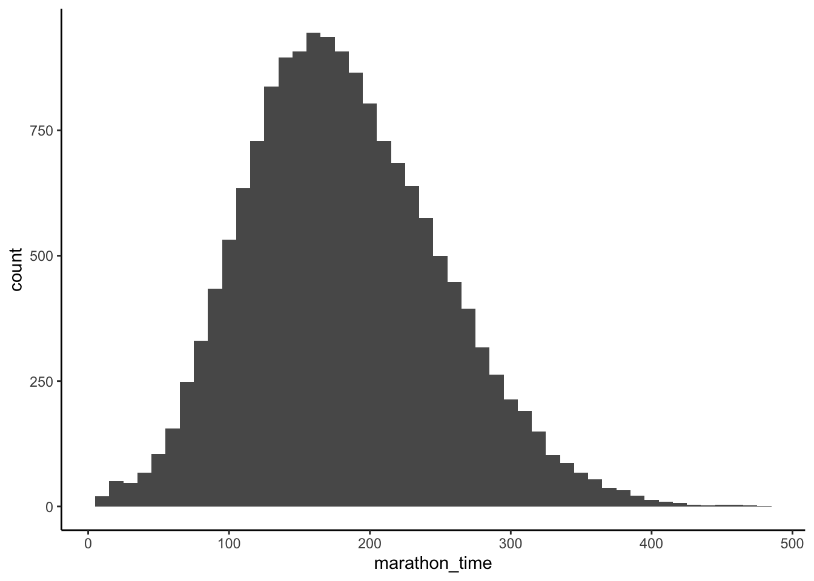
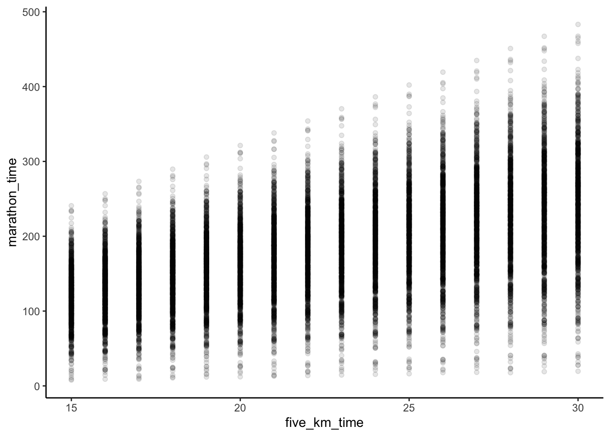
무엇을 해야 할지 확신이 서지 않는다면 rstanarm이 데이터에 따라 사전 분포를 스케일링하여 지정된 사전 분포를 개선하는 데 도움이 될 수 있습니다. 합리적이라고 생각하는 사전 분포를 지정하고(기본값일지라도) 함수에 포함하되, “autoscale = TRUE”도 포함하면 rstanarm이 스케일을 조정할 것입니다. 이러한 업데이트된 사전 분포를 사용하여 모델을 다시 실행하고 자동 스케일링을 허용하면 표 tbl-modelsummarybayesbetter의 두 번째 열에 있는 훨씬 더 나은 결과를 얻을 수 있습니다. 그런 다음 해당 결과를 작성된 모델에 추가할 수 있습니다.
sim_run_data_second_model_rstanarm <-
stan_glm(
formula = marathon_time ~ five_km_time + was_raining,
data = sim_run_data,
family = gaussian(),
prior = normal(location = 8, scale = 2.5, autoscale = TRUE),
prior_intercept = normal(0, 2.5, autoscale = TRUE),
prior_aux = exponential(rate = 1, autoscale = TRUE),
seed = 853
)
saveRDS(
sim_run_data_second_model_rstanarm,
file = "sim_run_data_second_model_rstanarm.rds"
)modelsummary(
list(
"비확장 사전 분포" = sim_run_data_first_model_rstanarm,
"자동 확장 사전 분포" = sim_run_data_second_model_rstanarm
),
fmt = 2
)| 비확장 사전 분포 | 자동 확장 사전 분포 | |
|---|---|---|
| (Intercept) | -67.50 | 8.66 |
| five_km_time | 3.47 | 7.90 |
| was_rainingYes | 0.12 | 9.23 |
| Num.Obs. | 100 | 100 |
| R2 | 0.015 | 0.797 |
| R2 Adj. | -1.000 | 0.790 |
| Log.Lik. | -678.336 | -425.193 |
| ELPD | -679.5 | -429.0 |
| ELPD s.e. | 3.3 | 8.9 |
| LOOIC | 1359.0 | 858.0 |
| LOOIC s.e. | 6.6 | 17.8 |
| WAIC | 1359.0 | 857.9 |
| RMSE | 175.52 | 16.85 |
“autoscale = TRUE” 옵션을 사용했으므로 rstanarm의 prior_summary()를 사용하여 사전 분포가 어떻게 업데이트되었는지 살펴보는 것이 도움이 될 수 있습니다.
prior_summary(sim_run_data_second_model_rstanarm)Priors for model 'sim_run_data_second_model_rstanarm'
------
Intercept (after predictors centered)
Specified prior:
~ normal(location = 0, scale = 2.5)
Adjusted prior:
~ normal(location = 0, scale = 95)
Coefficients
Specified prior:
~ normal(location = [8,8], scale = [2.5,2.5])
Adjusted prior:
~ normal(location = [8,8], scale = [ 22.64,245.52])
Auxiliary (sigma)
Specified prior:
~ exponential(rate = 1)
Adjusted prior:
~ exponential(rate = 0.026)
------
See help('prior_summary.stanreg') for more details12.4.2 사후 분포
베이즈 모델을 구축한 후, 그것이 무엇을 의미하는지 살펴보고 싶을 수 있습니다(그림 fig-ppcheckandposteriorvsprior). 이를 수행하는 한 가지 방법은 사후 분포를 고려하는 것입니다.
사후 분포를 사용하는 한 가지 방법은 모델이 데이터를 잘 적합하는지 여부를 고려하는 것입니다. 아이디어는 모델이 데이터를 잘 적합한다면, 사후 분포를 사용하여 실제 데이터와 유사한 데이터를 시뮬레이션할 수 있어야 한다는 것입니다(Gelman 기타 2020). rstanarm의 pp_check()를 사용하여 사후 예측 검사를 구현할 수 있습니다(그림 fig-ppcheckandposteriorvsprior-1). 이것은 실제 결과 변수를 사후 분포에서 시뮬레이션한 것과 비교합니다. 그리고 posterior_vs_prior()를 사용하여 사후 분포를 사전 분포와 비교하여 데이터가 고려된 후 추정치가 얼마나 변하는지 확인할 수 있습니다(그림 fig-ppcheckandposteriorvsprior-2). 다행히 pp_check()와 posterior_vs_prior()는 ggplot2 객체를 반환하므로 그래프를 조작하는 일반적인 방식으로 모양을 수정할 수 있습니다. 이러한 검사 및 논의는 일반적으로 논문의 본문에서 간략하게 언급되고, 세부 사항 및 그래프는 전용 부록에 추가됩니다.
pp_check(sim_run_data_second_model_rstanarm) +
theme_classic() +
theme(legend.position = "bottom")
posterior_vs_prior(sim_run_data_second_model_rstanarm) +
theme_minimal() +
scale_color_brewer(palette = "Set1") +
theme(legend.position = "bottom") +
coord_flip()
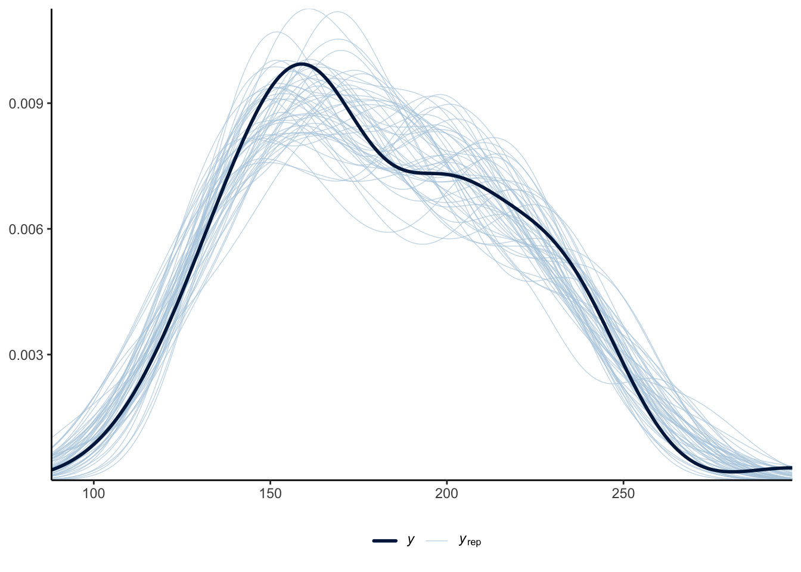
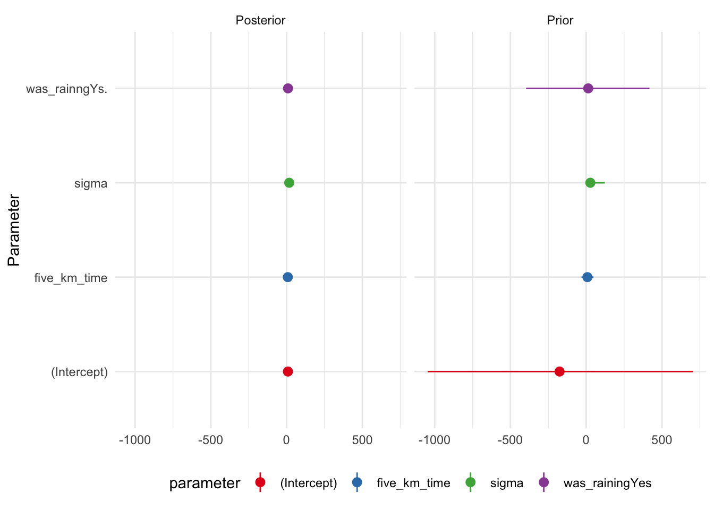
이러한 간단한 모델의 경우 예측과 추론 접근 방식 간의 차이는 미미합니다. 그러나 모델 또는 데이터 복잡성이 증가함에 따라 이러한 차이가 중요해질 수 있습니다.
우리는 이미 신뢰 구간에 대해 논의했으며, 신뢰 구간의 베이즈 등가물은 “신뢰 구간”이라고 불리며, 이 경우 95%의 특정 확률 질량이 있는 두 지점을 반영합니다. 베이즈 추정은 각 계수에 대한 분포를 제공합니다. 이는 이 구간을 생성하는 데 사용할 수 있는 무한한 수의 점이 있음을 의미합니다. 전체 분포는 그래픽으로 표시되어야 합니다(그림 fig-credibleintervals). 이는 교차 참조된 부록을 사용할 수 있습니다.
plot(
sim_run_data_second_model_rstanarm,
"areas"
)
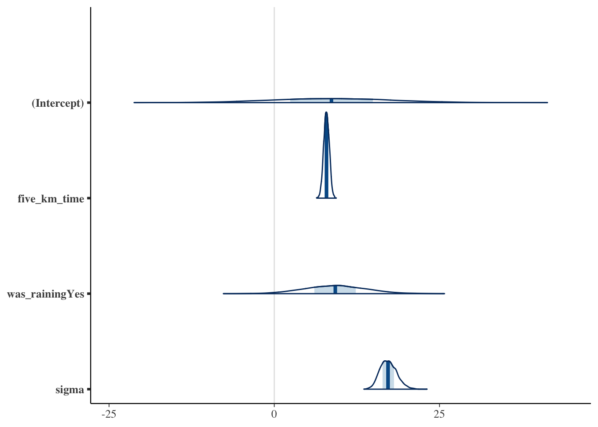
12.4.3 진단
마지막으로 확인하고 싶은 측면은 실용적인 문제입니다. rstanarm은 마르코프 연쇄 몬테카를로(MCMC)라는 샘플링 알고리즘을 사용하여 관심 있는 사후 분포에서 샘플을 얻습니다. 알고리즘에 문제가 발생했다는 징후가 있는지 빠르게 확인해야 합니다. 그림 fig-stanareyouokay-1과 같은 트레이스 플롯과 그림 fig-stanareyouokay-2와 같은 Rhat 플롯을 고려합니다. 이들은 일반적으로 교차 참조된 부록에 포함됩니다.
plot(sim_run_data_second_model_rstanarm, "trace")
plot(sim_run_data_second_model_rstanarm, "rhat")
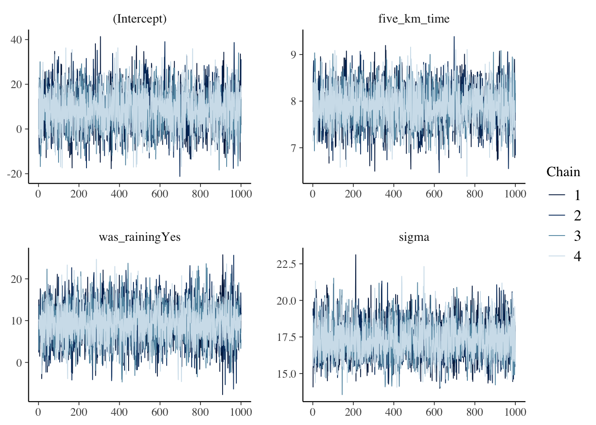
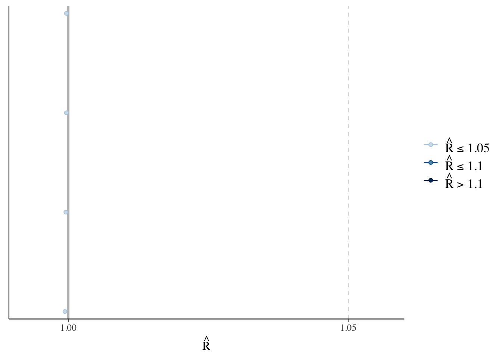
트레이스 플롯에서 우리는 튀어 오르는 것처럼 보이지만 수평이며 체인 간에 좋은 겹침이 있는 선을 찾고 있습니다. 그림 fig-stanareyouokay-1의 트레이스 플롯은 특이한 점을 시사하지 않습니다. 마찬가지로, Rhat 플롯에서는 모든 것이 1에 가깝고 이상적으로는 1.1을 넘지 않기를 바랍니다. 다시 그림 fig-stanareyouokay-2는 문제가 없음을 시사하는 예시입니다. 이러한 진단이 이와 같지 않다면, 예측 변수를 제거하거나 수정하여 모델을 단순화하고, 사전 분포를 변경한 다음 다시 실행하십시오.
12.4.4 병렬 처리
때때로 컴퓨터가 동일한 작업을 여러 번 수행해야 하기 때문에 코드가 느려집니다. 우리는 이를 활용하여 병렬 처리를 사용하여 이러한 작업을 동시에 수행할 수 있습니다. 이는 베이즈 모델을 추정할 때 특히 그렇습니다.
tictoc을 설치하고 로드한 후 tic() 및 toc()를 사용하여 코드의 다양한 측면 시간을 측정할 수 있습니다. 이것은 병렬 처리뿐만 아니라 일반적으로 가장 큰 지연이 어디에 있는지 파악하는 데도 유용합니다.
tic("첫 번째 코드 조각")
print("빠른 코드")
toc()
tic("두 번째 코드 조각")
Sys.sleep(3)
print("느린 코드")
toc()따라서 코드를 느리게 하는 무언가가 있다는 것을 알고 있습니다. (이 인위적인 경우 Sys.sleep()이 3초의 지연을 유발합니다.)
base R의 일부인 parallel을 사용하여 함수를 병렬로 실행할 수 있습니다. 추가 기능을 제공하는 future를 사용할 수도 있습니다. future를 설치하고 로드한 후 plan()을 사용하여 순차적으로(“sequential”) 또는 병렬로(“multisession”) 실행할지 여부를 지정합니다. 그런 다음 적용하려는 것을 future() 안에 래핑합니다.
이를 실제로 보기 위해 데이터셋을 생성한 다음 행별로 함수를 구현할 것입니다.
simulated_data <-
tibble(
random_draws = runif(n = 1000000, min = 0, max = 1000) |> round(),
more_random_draws = runif(n = 1000000, min = 0, max = 1000) |> round()
)
plan(sequential)
tic()
simulated_data <-
simulated_data |>
rowwise() |>
mutate(which_is_smaller =
min(c(random_draws,
more_random_draws)))
toc()
plan(multisession)
tic()
simulated_data <-
future(simulated_data |>
rowwise() |>
mutate(which_is_smaller =
min(c(
random_draws,
more_random_draws
))))
toc()순차적 접근 방식은 약 5초가 걸리는 반면, 다중 세션 접근 방식은 약 0.3초가 걸립니다.
베이즈 모델을 추정하는 경우 rstanarm과 같은 많은 패키지는 cores를 통해 병렬 처리 지원이 내장되어 있습니다.
12.5 결론
이 장에서는 선형 모델을 다루었습니다. 분석의 기초를 확립하고 몇 가지 필수적인 접근 방식을 설명했습니다. 또한 많은 부분을 간략하게 다루었습니다. 이 장과 다음 장은 함께 고려되어야 합니다. 이들은 시작하는 데 충분하지만, 그 이상을 위해서는 sec-concluding-remarks에서 권장하는 모델링 책을 살펴보십시오.
sec-its-just-a-linear-model과 sec-its-just-a-generalized-linear-model를 통해 다양한 베이즈 모델 접근 방식을 다루었습니다. 그러나 모든 모델에 대해 모든 것을 다루지는 않았습니다.
“충분하다”는 것이 무엇인지 명확하게 정의하기는 어렵습니다. 왜냐하면 맥락에 따라 다르기 때문입니다. 그러나 sec-its-just-a-linear-model과 sec-its-just-a-generalized-linear-model에서 소개된 개념을 바탕으로 한 다음 체크리스트는 시작하는 데 대부분의 목적에 충분할 것입니다. 논문의 모델 섹션에서 방정식을 사용하여 모델을 작성하고, 방정식을 설명하는 몇 단락의 텍스트를 포함하십시오. 그런 다음 모델 선택을 정당화하고, 고려했던 대안을 간략하게 설명하십시오. 마지막으로 모델이 어떻게 적합되었는지 설명하는 문장을 포함하십시오. 이 경우 rstanarm으로 적합되었을 가능성이 높으며, 진단은 교차 참조된 부록에서 확인할 수 있습니다. 해당 부록에는 사전 예측 검사, 트레이스 플롯, Rhat 플롯, 사후 분포 및 사후 예측 검사가 포함되어야 합니다.
결과 섹션에는 modelsummary를 사용하여 구축된 추정치 표를 포함하고, marginaleffects의 도움을 받아 설명하십시오. 특히 다단계 모델을 사용하는 경우 tidybayes의 도움을 받아 결과 그래프를 포함하는 것도 유용할 수 있습니다. 모델 자체는 별도의 R 스크립트에서 실행되어야 합니다. 클래스 및 관측치 수에 대한 테스트가 선행되어야 합니다. 계수에 대한 테스트가 뒤따라야 합니다. 이들은 시뮬레이션을 기반으로 해야 합니다. 해당 R 스크립트에서 saveRDS()를 사용하여 모델을 저장해야 합니다. Quarto 문서에서는 readRDS()를 사용하여 해당 모델을 읽어들여야 합니다.
12.6 연습 문제
연습
- (계획) 다음 시나리오를 고려하십시오: 어떤 사람이 런던의 모든 건물의 높이에 관심이 있습니다. 그들은 도시를 돌아다니며 각 건물의 층수를 세고, 건설 연도를 기록합니다. 데이터셋이 어떻게 생겼을지 스케치한 다음, 모든 관측치를 보여주기 위해 만들 수 있는 그래프를 스케치하십시오.
- (시뮬레이션) 설명된 시나리오를 더 고려하고 상황을 시뮬레이션하십시오. 층수와 관련된 세 가지 예측 변수를 포함하십시오. 시뮬레이션된 데이터를 기반으로 최소 10개의 테스트를 포함하십시오. 코드가 포함된 GitHub Gist 링크를 제출하십시오.
- (수집) 그러한 데이터셋의 가능한 출처를 설명하십시오.
- (탐색)
ggplot2를 사용하여 스케치한 그래프를 만드십시오. 그런 다음rstanarm을 사용하여 층수를 결과로, 건설 연도를 예측 변수로 하는 모델을 구축하십시오. 코드가 포함된 GitHub Gist 링크를 제출하십시오. - (소통) 자신이 한 일에 대해 두 단락을 작성하십시오.
퀴즈
- 두 가지 예측 변수 “인종”과 “성별”, 그리고 이들과 불완전하게 관련된 하나의 결과 변수 “투표 선호도”가 있는 상황을 시뮬레이션하십시오. 코드가 포함된 GitHub Gist 링크를 제출하십시오.
- 어떤 결과 변수 Y와 어떤 예측 변수 X 사이의 선형 관계를 작성하십시오. 절편 항은 무엇입니까? 기울기 항은 무엇입니까? 이들에 삿갓을 추가하면 무엇을 나타냅니까?
- 다음 중 선형 모델의 예는 무엇입니까 (모두 선택하십시오)?
lm(y ~ x_1 + x_2 + x_3, data = my_data)lm(y ~ x_1 + x_2^2 + x_3, data = my_data)lm(y ~ x_1 * x_2 + x_3, data = my_data)lm(y ~ x_1 + x_1^2 + x_2 + x_3, data = my_data)
- 최소 제곱 기준은 무엇입니까? 마찬가지로, RSS는 무엇이며 최소 제곱 회귀를 실행할 때 무엇을 하려고 합니까?
- 편향이란 무엇입니까 (통계적 맥락에서)?
- 지구, 불, 바람, 물, 마음의 다섯 가지 변수를 고려하십시오. 마음이 다른 네 가지에 의존하고, 다른 네 가지는 서로 독립적인 시나리오를 시뮬레이션하십시오. 그런 다음 다른 변수의 함수로 마음을 설명하는 선형 회귀 모델을 적합하는 R 코드를 작성하십시오. 코드가 포함된 GitHub Gist 링크를 제출하십시오.
- (greenland2016statistical에?) 따르면, p-값은 다음을 테스트합니다 (하나 선택):
- 데이터가 어떻게 생성되었는지에 대한 모든 가정(전체 모델), 즉 테스트하려는 특정 가설(예: 귀무 가설)뿐만 아니라.
- 테스트하려는 가설이 참인지 여부.
- 결과가 “통계적으로 유의미하다”고 선언될 수 있는 이분법.
- (greenland2016statistical에?) 따르면, p-값이 작을 수 있는 이유는 (모두 선택하십시오):
- 목표 가설이 거짓입니다.
- 연구 프로토콜이 위반되었습니다.
- 작은 크기를 기반으로 발표를 위해 선택되었습니다.
- p-값이 무엇인지, 용어 자체(즉, “p-값”)와 XKCD Simple Writer에 따르면 영어에서 가장 흔한 1,000개 단어 중 하나인 단어만을 사용하여 설명하십시오. (한두 단락으로 작성하십시오.)
- 검정력이란 무엇입니까 (통계적 맥락에서)?
- COPSS 회장상 또는 가이 메달 금상을 수상한 사람들의 목록을 살펴보고, 이 책의 “거인의 어깨 위에 서서” 항목 스타일로 짧은 전기를 작성하십시오.
- 이 장의 시작 부분에 포함된 McElreath ([2015년] 2020, p. 162)의 인용문을 예시와 인용을 통해 논의하십시오. 최소 세 단락을 작성하십시오.
수업 활동
- 시작 폴더를 사용하고 새 리포지토리를 만드십시오.
palmerpenguins를 사용하여 아델리 펭귄의 부리 길이와 깊이 사이의 관계를 이해하는 데 관심이 있습니다. 스케치 및 시뮬레이션부터 시작하십시오.- 그런 다음 데이터 섹션에 세 개의 그래프를 추가하십시오. 각 변수별로 하나씩, 그리고 두 변수 간의 관계를 나타내는 세 번째 그래프입니다.
- 그런 다음 모델 섹션에 모델을 작성하십시오. R 스크립트에서 두 변수 간의 선형 모델을 추정하기 위해
rstanarm을 사용하십시오. - 해당 모델을 결과 섹션으로 읽어들이고
modelsummary를 사용하여 요약 표를 만드십시오.
palmerpenguins::penguins |>
filter(species == "Adelie") |>
ggplot(aes(x = bill_length_mm, y = bill_depth_mm)) +
geom_point()
- (이 질문은 Gelman 와/과 Vehtari (2024, p. 32)을 기반으로 합니다.) 여기의 지침을 따라 종이 비행기를 만드십시오. 다음을 측정하십시오.
- 날개 너비;
- 날개 길이;
- 날개 끝 높이;
- 안전한 공간에서 비행기를 날리고 얼마나 오랫동안 공중에 머무는지 측정하십시오.
표 tbl-planes와 같은 표에 자신의 데이터를 학급의 나머지 데이터와 결합하십시오. 그런 다음 선형 회귀를 사용하여 종속 변수와 독립 변수 간의 관계를 탐색하십시오. 결과에 따라 이 연습을 다시 수행한다면 비행기 디자인을 어떻게 변경하시겠습니까?
| 날개 너비 (mm) | 날개 길이 (mm) | 날개 끝 높이 (mm) | 비행 시간 (초) |
|---|---|---|---|
| ... | ... | ... | ... |
- 미국 카운티별 인플레이션을 설명하는 선형 회귀 모델에 FIPS 코드를 설명 변수로 추가한다고 가정해 보십시오. 이것이 미칠 영향과 이것이 좋은 생각인지 논의하십시오. 더 명확하게 생각하는 데 도움이 되도록 상황을 시뮬레이션하고 싶을 수 있습니다.
- 영국 각 도시의 독감 유병률을 설명하려는 회귀에 위도와 경도를 설명 변수로 추가한다고 가정해 보십시오. 이것이 미칠 영향과 이것이 좋은 생각인지 논의하십시오. 더 명확하게 생각하는 데 도움이 되도록 상황을 시뮬레이션하고 싶을 수 있습니다.
- 셰익스피어의 줄리어스 시저에서 카시우스는 유명하게 다음과 같이 말합니다.
브루투스여, 잘못은 우리의 별에 있지 않고, 우리 자신에게 있다. 우리가 하급자이기 때문이다.
p-값, 회귀표에서 유의성 별의 흔하지만 잠재적으로 오해의 소지가 있는 사용, 그리고 (ioannidis2005most를?) 이 인용문과 관련하여 논의하십시오. - 분산 추정치가 음수가 된다고 가정해 보십시오. 논의하십시오.
과제
진정한 데이터 생성 과정이 평균 1, 표준 편차 1인 정규 분포라고 가정합니다. 우리는 어떤 도구를 사용하여 1,000개의 관측치를 얻습니다. 다음 상황을 시뮬레이션하십시오.
- 우리에게 알려지지 않은 채, 도구에 오류가 있어 최대 메모리가 900개의 관측치이며, 그 지점에서 덮어쓰기 시작하므로 마지막 100개의 관측치는 실제로는 처음 100개의 반복입니다.
- 우리는 데이터셋을 정리하고 준비하기 위해 연구 조교를 고용합니다. 이 과정에서 우리에게 알려지지 않은 채, 그들은 실수로 음수 표본의 절반을 양수로 변경합니다.
- 그들은 또한 실수로 1에서 1.1 사이의 모든 값의 소수점을 변경하여, 예를 들어 1은 0.1이 되고, 1.1은 0.11이 됩니다.
- 마침내 정리된 데이터셋을 얻고, 진정한 데이터 생성 과정의 평균이 0보다 큰지 이해하는 데 관심이 있습니다.
자신이 한 일과 발견한 내용에 대해 최소 두 페이지를 작성하십시오. 또한 문제가 미친 영향과 실제 분석이 이러한 문제 중 일부를 플래그할 기회를 가질 수 있도록 취할 수 있는 단계를 논의하십시오.
Quarto를 사용하고, 적절한 제목, 저자, 날짜, GitHub 리포지토리 링크 및 인용을 포함하여 초안을 작성하십시오. 그 후, 다른 학생과 짝을 이루어 작성한 작업을 교환하십시오. 그들의 피드백을 바탕으로 업데이트하고, 논문에 그들의 이름을 명시하여 인정하십시오. PDF를 제출하십시오.
Arel-Bundock, Vincent. 2022. “modelsummary: Data and Model Summaries in R”. Journal of Statistical Software 103 (1): 1–23. https://doi.org/10.18637/jss.v103.i01.
———. 2024. tinytable: Simple and Configurable Tables in “HTML”, “LaTeX”, “Markdown”, “Word”, “PNG”, “PDF”, and “Typst” Formats. https://vincentarelbundock.github.io/tinytable/.
Bååth, Rasmus. 2018. beepr: Easily Play Notification Sounds on any Platform. https://CRAN.R-project.org/package=beepr.
Bolker, Ben, 와/과 David Robinson. 2022. broom.mixed: Tidying Methods for Mixed Models. https://CRAN.R-project.org/package=broom.mixed.
Gao, Lucy, Jacob Bien, 와/과 Daniela Witten. 2022. “Selective Inference for Hierarchical Clustering”. Journal of the American Statistical Association, 10월, 1–11. https://doi.org/10.1080/01621459.2022.2116331.
Gelman, Andrew, Jennifer Hill, 와/과 Aki Vehtari. 2020. Regression and Other Stories. Cambridge University Press. https://avehtari.github.io/ROS-Examples/.
Gelman, Andrew, 와/과 Aki Vehtari. 2024. Active Statistics: Stories, Games, Problems, and Hands-on Demonstrations for Applied Regression and Causal Inference. Cambridge University Press. https://doi.org/10.1017/9781009436243.
Gelman, Andrew, Aki Vehtari, Daniel Simpson, Charles Margossian, Bob Carpenter, Yuling Yao, Lauren Kennedy, Jonah Gabry, Paul-Christian Bürkner, 와/과 Martin Modrák. 2020. “Bayesian Workflow”. arXiv. https://doi.org/10.48550/arXiv.2011.01808.
Goodrich, Ben, Jonah Gabry, Imad Ali, 와/과 Sam Brilleman. 2023. “rstanarm: Bayesian applied regression modeling via Stan”. https://mc-stan.org/rstanarm.
Greenland, Sander, Stephen Senn, Kenneth Rothman, John Carlin, Charles Poole, Steven Goodman, 와/과 Douglas Altman. 2016. “Statistical Tests, P values, Confidence Intervals, and Power: A Guide to Misinterpretations”. European journal of epidemiology 31 (4): 337–50. https://doi.org/10.1007/s10654-016-0149-3.
Ioannidis, John. 2005. “Why most published research findings are false”. PLOS Medicine 2 (8): e124. https://doi.org/10.1371/journal.pmed.0020124.
Izrailev, Sergei. 2022. tictoc: Functions for Timing R Scripts, as Well as Implementations of “Stack” and “List” Structures. https://CRAN.R-project.org/package=tictoc.
James, Gareth, Daniela Witten, Trevor Hastie, 와/과 Robert Tibshirani. (2013년) 2021. An Introduction to Statistical Learning with Applications in R. 2nd ed. Springer. https://www.statlearning.com.
Kuhn, Max, 와/과 Hadley Wickham. 2020. tidymodels: a collection of packages for modeling and machine learning using tidyverse principles. https://www.tidymodels.org.
McElreath, Richard. (2015년) 2020. Statistical Rethinking: A Bayesian Course with Examples in R and Stan. 2nd ed. Chapman; Hall/CRC.
Nelder, John. 1999. “From Statistics to Statistical Science”. Journal of the Royal Statistical Society: Series D (The Statistician) 48 (2): 257–69. https://doi.org/10.1111/1467-9884.00187.
Neufeld, Anna, 와/과 Daniela Witten. 2021. “Discussion of Breiman’s "Two Cultures": From Two Cultures to One”. Observational Studies 7 (1): 171–74. https://doi.org/10.1353/obs.2021.0004.
Pitman, Jim. 1993. Probability. 1st ed. New York: Springer. https://doi.org/10.1007/978-1-4612-4374-8.
R Core Team. 2024. R: A Language and Environment for Statistical Computing. Vienna, Austria: R Foundation for Statistical Computing. https://www.R-project.org/.
Robinson, David, Alex Hayes, 와/과 Simon Couch. 2022. broom: Convert Statistical Objects into Tidy Tibbles. https://CRAN.R-project.org/package=broom.
Staicu, Ana-Maria. 2017. “Interview with Nancy Reid”. International Statistical Review 85 (3): 381–403. https://doi.org/10.1111/insr.12237.
Stigler, Stephen. 1986. The History of Statistics. Massachusetts: Belknap Harvard.
Wasserman, Larry. 2005. All of Statistics. Springer.
Wickham, Hadley. 2011. “testthat: Get Started with Testing”. The R Journal 3: 5–10. https://journal.r-project.org/archive/2011-1/RJournal%5F2011-1%5FWickham.pdf.
Wickham, Hadley, Mara Averick, Jenny Bryan, Winston Chang, Lucy D’Agostino McGowan, Romain François, Garrett Grolemund, 기타. 2019. “Welcome to the Tidyverse”. Journal of Open Source Software 4 (43): 1686. https://doi.org/10.21105/joss.01686.
Wickham, Hadley, 와/과 Lionel Henry. 2022. purrr: Functional Programming Tools. https://CRAN.R-project.org/package=purrr.
Wilde, Oscar. 1891. The Picture of Dorian Gray. https://www.gutenberg.org/files/174/174-h/174-h.htm.
Wood, Simon. 2015. Core Statistics. Cambridge University Press. https://www.maths.ed.ac.uk/\%7Eswood34/core-statistics.pdf.
예시에서 표본 크기가 20으로 작으므로 엄밀히 말하면 유한 표본 조정을 사용해야 하지만, 이 책의 초점이 아니므로 일반적인 접근 방식으로 진행하겠습니다.↩︎